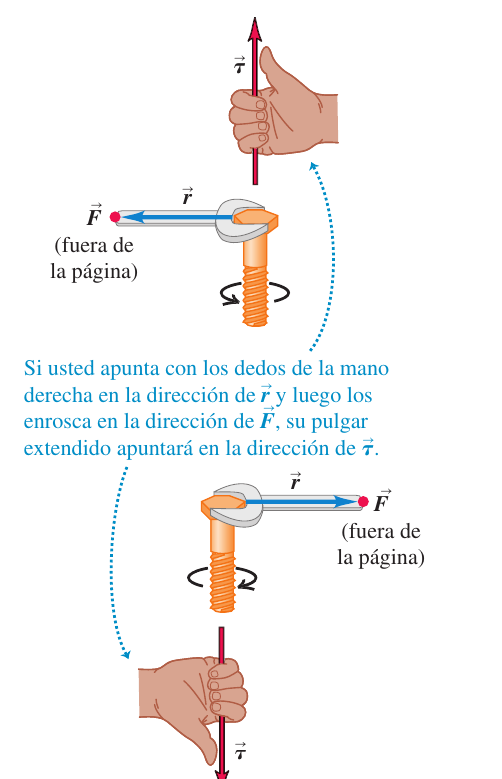
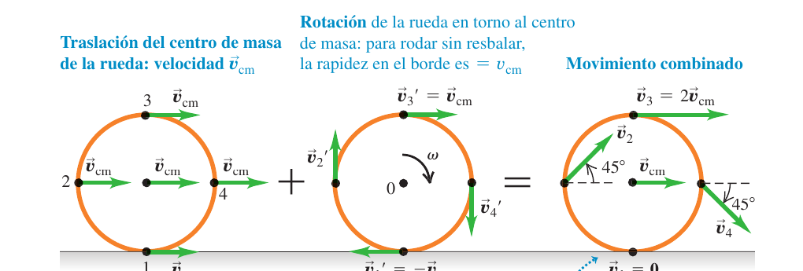
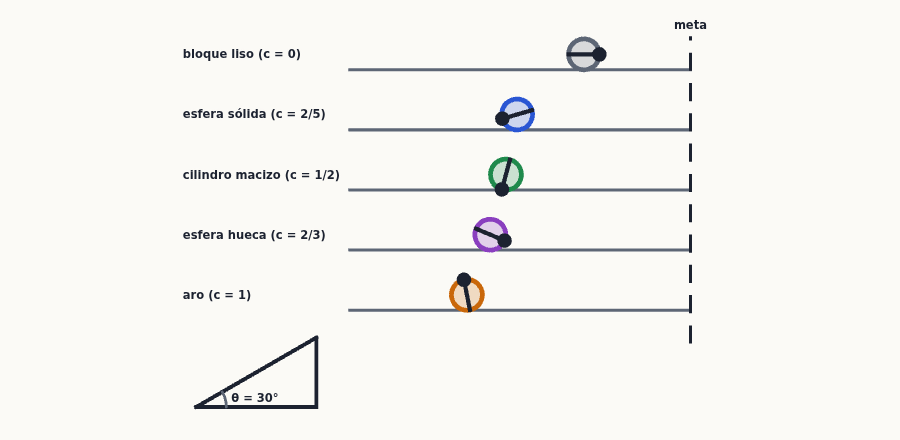
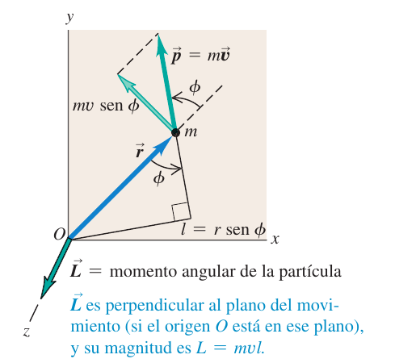
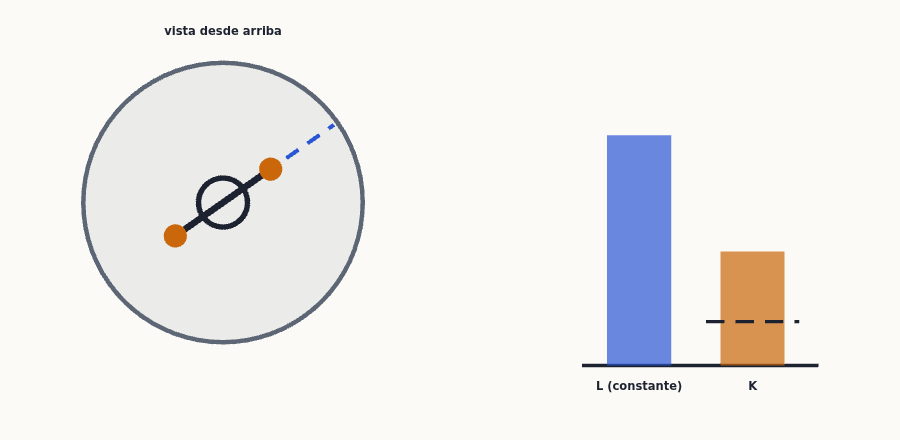
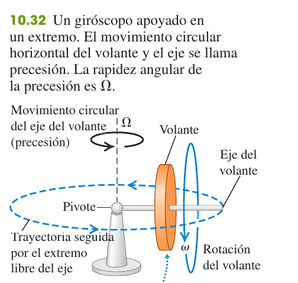
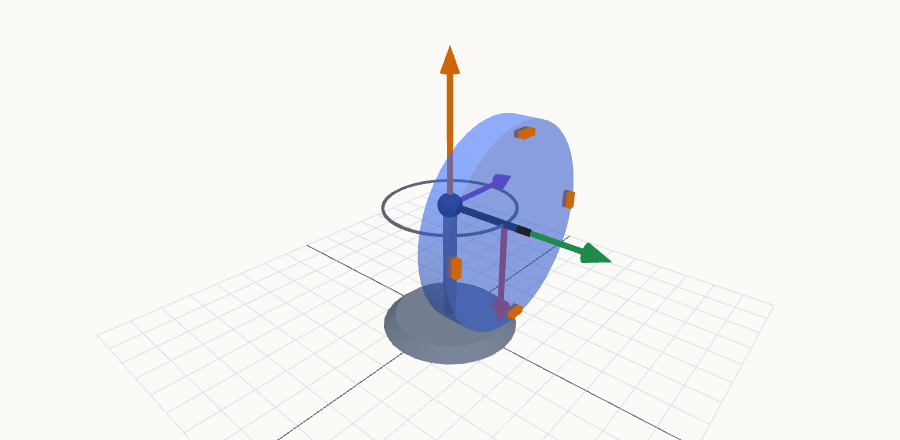
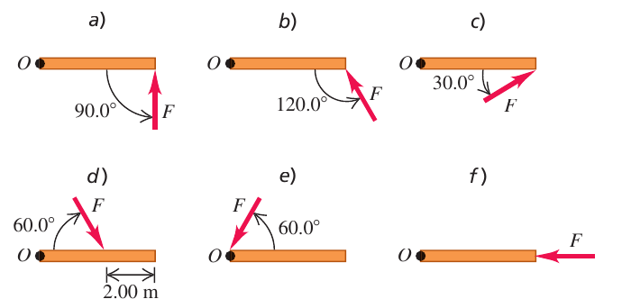

Dinámica del movimiento de rotación
En el tema 9 describiste el giro; ahora descubres qué lo provoca. La fuerza que acelera un movimiento rectilíneo tiene un gemelo para la rotación, la torca (o momento de una fuerza), y la segunda ley de Newton se convierte en $\sum\tau=I\alpha$. Con ella entenderás por qué una bola rueda por una rampa más despacio que un bloque que desliza, qué hace la fricción en un yoyó, cómo una patinadora acelera su giro al encoger los brazos (conservación del momento angular) y por qué un giróscopo no se cae.
El tema en 5 minutos P
Una sola idea: en el tema 9 describiste el giro; aquí ves qué lo provoca. Lo que hace girar no es la fuerza sola, sino la fuerza por su distancia perpendicular al eje: la torca $\tau=Fl$. Y la segunda ley de Newton tiene su gemela para el giro, $\sum\tau=I\alpha$, con el momento de inercia $I$ en el papel de la masa. Si el cuerpo además avanza (una rueda que rueda, un yoyó), se separa en traslación del centro de masa + giro alrededor del centro de masa, cada uno con su ley. Y si no hay torca externa, se conserva el momento angular $L=I\omega$: la patinadora que encoge los brazos gira más deprisa.
Necesitas: $\sum\vec F=m\vec a$, los diagramas de cuerpo libre y la fricción estática $f_s\le\mu_sn$ (T4-T5); el trabajo y la energía (T6-T7); el centro de masa y los choques (T8); y todo el T9: $\omega$, $\alpha$, $v=r\omega$, el momento de inercia (tabla 9.2, ejes paralelos) y $K=\tfrac12I\omega^2$. Para la torca como vector, el producto vectorial y la regla de la mano derecha (T1). Si el enunciado no da $g$, usa $9{,}8\ \text{m/s}^2$; si da $9{,}81$, ese.
El método en 4 pasos (úsalo siempre, en este orden)
Es la «Estrategia para resolver problemas 10.1» del libro, ampliada con la rodadura (§10.3) y el momento angular (§10.6). U p.308-320
Las 6 fórmulas que hay que saber
| Fórmula | Cuándo se usa |
|---|---|
| $\tau=Fl=rF\sin\phi$, $\ \vec\tau=\vec r\times\vec F$ | «Torca de la fuerza respecto a O», «brazo de palanca», «sentido de giro». |
| $\sum\tau_z=I\alpha_z$ | Eje fijo: polea, rueda con cojinetes, piedra de afilar, «fuerza que ejerce el eje». |
| $\sum\vec F=M\vec a_{cm}$, $\ \sum\tau_{cm}=I_{cm}\alpha$, $\ a_{cm}=R\alpha$ | «Rueda sin deslizar», «yoyó», «cilindro en una rampa», «coeficiente mínimo de fricción». |
| $K=\tfrac12Mv_{cm}^2+\tfrac12I_{cm}\omega^2$, $\ v_{cm}=R\omega$ | «Velocidad tras bajar una altura $h$», «¿qué cuerpo llega antes?». |
| $W=\tau\,\Delta\theta$, $\ W_{tot}=\Delta K_{rot}$, $\ P=\tau\omega$ | «Trabajo de un motor», «potencia», teoría «Trabajo y potencia en rotación». |
| $L=I\omega$, $\ L=mvl$, $\ \sum\tau_{ext}=0\Rightarrow L_1=L_2$ | «Se incrusta», «salta del extremo», «encoge los brazos», «se acoplan», «pivote». |
Qué cae en examen
Es uno de los temas más examinados: 6 problemas de 3 puntos (X1-X6) y 2 preguntas de teoría de 4 puntos con cuestiones (X7-X8), que han salido en 4 convocatorias. Los problemas son de dos familias: cuerpo que rueda o se desenrolla con fricción (cilindro en rampa, yoyó, cilindro empujado; X1-X4) y conservación del momento angular con un eje (acróbata que salta de una barra, bala que se incrusta en una varilla; X5-X6). X ×6 La teoría: «Trabajo y potencia en un movimiento de rotación» (Febrero 2025, 2ª semana) y «Conservación del momento angular» (Febrero 2019, Febrero 2020 y Septiembre 2024). X ×4
Elige tu ruta
Esta página + lo marcado 🔴 imprescindible (secciones 1-6) + ejercicios del bloque «Núcleo» (aquí están los 6 problemas de examen).
Todo lo anterior + ⚪ giróscopos + bloque «Práctica» + los dos guiones de teoría (X7, X8).
Chuleta, errores frecuentes, lista de comprobación y X1-X6 sin mirar la solución.
¿?¿Qué tipo de problema es? 🔴 P
Lee el enunciado, busca la pista en la primera columna y ve directo al método y al ejercicio modelo.
| Si el enunciado dice… | Haz esto | Ejercicio modelo |
|---|---|---|
| «torca respecto a O», «fuerza a 120° con la varilla», «brazo de palanca» | $\tau=rF\sin\phi$ (o $F$ × distancia perpendicular a su recta); signo por el sentido de giro; recta por O ⇒ $\tau=0$. | E1 |
| «cuerda enrollada en una rueda con eje fijo», «fuerza que ejerce el eje» | $\sum\tau=I\alpha$ respecto al eje, $a_{cuerda}=R\alpha$; la fuerza del eje sale de $\sum\vec F=0$. | E3 |
| «varias torcas», «fricción en los cojinetes», «mantener la velocidad angular constante» | $\tau_{motriz}-\sum\tau_{resist}=I\alpha$; si $\omega$ constante, $\sum\tau=0$; rpm → rad/s. | E6 |
| «cae desenrollando una cuerda», «¿a qué velocidad tras bajar $h$?» | Energía: $Mgh=\tfrac12Mv^2(1+I/MR^2)$ con $R$ el radio donde está la cuerda. | E4 |
| «yoyó», «la cuerda se enrolla en un eje de radio $b$» | $Mg-T=Ma$, $Tb=I_{cm}\alpha$, $a=b\alpha$ ⇒ $a=g/(1+I_{cm}/Mb^2)$. | X2, E7 |
| «rueda sin deslizar por una rampa», «coeficiente mínimo», «¿y si es hueco?» | $a=g\sin\beta/(1+c)$, $f=\tfrac{c}{1+c}Mg\sin\beta$, $\mu_{min}=\tfrac{c}{1+c}\tan\beta$ con $I_{cm}=cMR^2$. | X1, E5 |
| «fuerza aplicada en el eje del cilindro», «fuerza máxima para que no deslice» | Las dos ecuaciones con $F$; la fricción da la torca (su sentido sale del cálculo); impón $f=\mu_sn$. | X3 |
| «$F=t^2/2$», «¿en qué instante empieza a deslizar?» | Resuelve como si rodara ⇒ $f(F)$; iguala $f=\mu_sn$; después, fricción cinética. | X4 |
| «punto más alto», «velocidad de cada punto de la rueda» | $\vec v=\vec v_{cm}+\vec v_{giro}$, $|\vec v_{giro}|=R\omega=v_{cm}$: contacto 0, arriba $2v_{cm}$. | E2 |
| «salta del extremo de una barra con eje», «se incrusta en una varilla con pivote» | Conserva $L$ respecto al eje: $mvl=I\omega$ (no $p$: el eje empuja). $K$ no se conserva. | X5, X6 |
| «corre por el borde de una plataforma», «se detiene respecto a ella» | Suma con signos de $mRv$ e $I\omega$; al final $\omega=L/(I+mR^2)$. | E9 |
| «cuerda que pasa por un orificio», «se tira de la cuerda» | Fuerza central ⇒ $L=mvr$ constante; con $T=mv^2/r$ elimina $v$. | E8 |
| «golpe a una altura $h$ sobre el centro», «¿cuándo rueda sin deslizar?» | $mv_0=J$, $I\omega_0=Jh$; si desliza, conserva $L$ respecto a un punto de la línea de contacto. | Problema práctico |
| «Desarrolle el tema…» (trabajo y potencia en rotación; conservación del momento angular) | Guion: idea → definición y ecuación → deducción breve → ejemplo con números → cuestiones. | X7, X8 |
1Torca (momento de una fuerza) 🔴 U p.304
🎯 Antes de leer: para abrir una puerta pesada, ¿empujas cerca de las bisagras o lejos de ellas? ¿Y si empujas justo sobre la bisagra? (Piénsalo 20 s; la respuesta está en esta sección.)
Para abrir una puerta pesada empujas lejos de las bisagras y perpendicularmente a ella; junto a las bisagras, o empujando a lo largo de la puerta, no se mueve. Lo que hace girar no es la fuerza sola, sino la fuerza por la distancia perpendicular al eje: la torca (también «momento de una fuerza» o «par»). Es para el giro lo que la fuerza es para la traslación.
$$\tau=Fl=rF\sin\phi=F_{tan}\,r\qquad\text{(ecs. 10.1-10.2)}$$$\phi$ es el ángulo entre $\vec r$ (de O al punto de aplicación) y $\vec F$; $l=r\sin\phi$ es el brazo de palanca, la distancia perpendicular de O a la recta de acción; $F_{tan}$ es la componente perpendicular a $\vec r$ (la radial no hace girar). Antihoraria $+$, horaria $-$. Unidades: N·m (no se llaman julios). Ejemplo mínimo (ejemplo 10.1). Un fontanero de 900 N se pone de pie en el extremo de una llave de 0,80 m inclinada 19° sobre la horizontal: $\phi=109^\circ$, $l=0{,}80\sin109^\circ=0{,}756$ m y $\tau=900(0{,}756)=680$ N·m (o $F_{tan}=851$ N por 0,80 m). Error típico: hablar de «la torca de una fuerza» sin decir respecto a qué punto (cambia si cambias O), o multiplicar por la distancia al punto de aplicación en vez de por el brazo. Si la recta de acción pasa por O, $\tau=0$.
U p.304-306$$\vec\tau=\vec r\times\vec F\qquad\text{(ec. 10.3)}$$ Módulo $rF\sin\phi$ y dirección perpendicular al plano de $\vec r$ y $\vec F$, con la regla de la mano derecha: dedos a lo largo de $\vec r$, enróscalos hacia $\vec F$ y el pulgar da $\vec\tau$. En problemas planos, $\odot$ (sale de la página) es giro antihorario ($+$) y $\otimes$ (entra), horario ($-$). Ejemplo mínimo. En el ejemplo 10.1, $\vec r$ apunta arriba a la derecha y $\vec F$ hacia abajo: $\vec\tau$ sale de la página y la junta se afloja. Error típico: usar $\cos\phi$ en vez de $\sin\phi$: una fuerza paralela a $\vec r$ ($\phi=0^\circ$ o $180^\circ$) no da torca.
U p.305-306
✍️ Comprueba que lo has entendido (2 min)
- Empujas el extremo de una llave de 0,25 m con 80 N perpendiculares a ella. ¿Torca? ¿Y si empujas a 30° de la llave?
Ver respuesta
$\tau=80(0{,}25)=20$ N·m; a 30°: $\tau=80(0{,}25)\sin30^\circ=10$ N·m (la mitad). - Una fuerza de 50 N actúa en un punto a 2,0 m de O, pero su recta de acción pasa a 0,60 m de O. ¿Torca respecto a O?
Ver respuesta
El brazo es la distancia perpendicular a la recta: $\tau=50(0{,}60)=30$ N·m (no 100 N·m). - Sobre una rueda de 0,50 m de radio actúan 20 N tangentes en el borde (antihoraria) y 30 N tangentes a 0,20 m del eje (horaria). ¿Torca neta?
Ver respuesta
$\sum\tau=20(0{,}50)-30(0{,}20)=10-6=+4{,}0$ N·m, antihoraria (método de E1).
2Segunda ley de la rotación: $\sum\tau=I\alpha$ 🔴 U p.306
🎯 Antes de leer: la segunda ley de Newton para un giro tiene la misma forma que $F=ma$. ¿Qué magnitud hace el papel de la fuerza y cuál el de la masa? (Piénsalo 20 s; la respuesta está en esta sección.)
Una partícula de masa $m$ en una varilla ligera de longitud $r$, empujada con $F_{tan}$: $F_{tan}=ma_{tan}=m(r\alpha)$; multiplica por $r$ y sale $F_{tan}r=(mr^2)\alpha$, es decir, torca = momento de inercia × aceleración angular. Para un cuerpo rígido se suman todas las partículas y las torcas internas se anulan por pares (acción y reacción, sobre la misma recta):
$$\sum\tau_z=I\,\alpha_z\qquad\text{(ec. 10.7)}$$Es el calco de $\sum F=ma$: torca ↔ fuerza, $I$ ↔ masa. Solo cuentan las torcas externas, calculadas respecto al mismo eje que $I$; $\alpha$ en rad/s². Ejemplo mínimo (ejemplo 10.2). Cilindro macizo de 50 kg y $R=0{,}060$ m con eje fijo; se tira del cable enrollado con 9,0 N: $\tau=FR=0{,}54$ N·m, $I=\tfrac12MR^2=0{,}090$ kg·m², $\alpha=0{,}54/0{,}090=6{,}0$ rad/s² y el cable acelera $a=R\alpha=0{,}36$ m/s². Error típico: hacer $a=F/M=0{,}18$ m/s²: el cilindro no avanza, gira; su eje ejerce la fuerza que equilibra al cable.
U p.306-308Un diagrama y una ecuación por cuerpo, más la ligadura (Estrategia 10.1). Ejemplo 10.3: del cable del cilindro anterior ($M$, $R$) cuelga un bloque de masa $m$.
- Bloque (solo avanza, eje $y$ hacia abajo): $mg-T=ma$.
- Cilindro (solo gira): $TR=\tfrac12MR^2\alpha$. Ligadura: $a=R\alpha$ ⇒ $T=\tfrac12Ma$.
- Resolver: $a=\dfrac{g}{1+M/2m}$ y $T=\dfrac{Mmg}{M+2m}$: siempre $a\lt g$ y $T\lt mg$ (el bloque tiene que hacer girar el cilindro). Coincide con lo que da la energía (tema 9).
Error típico: poner $T=mg$, o la misma tensión a ambos lados de una polea con masa: la diferencia de tensiones $\Delta T\,R=I\alpha$ es justo lo que la hace girar.
U p.308-310, 328✍️ Comprueba que lo has entendido (2 min)
- Disco macizo de 2,0 kg y $R=0{,}10$ m con eje fijo; tiras de la cuerda enrollada con 4,0 N. ¿$\alpha$ y aceleración de la cuerda?
Ver respuesta
$I=\tfrac12(2{,}0)(0{,}10)^2=0{,}010$ kg·m², $\tau=0{,}40$ N·m, $\alpha=40$ rad/s², $a=R\alpha=4{,}0$ m/s². - Una rueda con $I=0{,}50$ kg·m² gira a 20 rad/s; un freno le aplica 2,0 N·m. ¿Cuánto tarda en pararse y cuántas vueltas da?
Ver respuesta
$\alpha=-2{,}0/0{,}50=-4{,}0$ rad/s²; $t=20/4{,}0=5{,}0$ s; $\Delta\theta=\omega_0^2/2|\alpha|=50$ rad $=7{,}96$ vueltas. - Del cable de un cilindro macizo de 4,0 kg con eje fijo cuelga un bloque de 2,0 kg. ¿Aceleración del bloque y tensión?
Ver respuesta
$a=\dfrac{g}{1+M/2m}=\dfrac{9{,}8}{2}=4{,}9$ m/s²; $T=\dfrac{Mmg}{M+2m}=9{,}8$ N, la mitad del peso del bloque (19,6 N).
3Traslación y rotación a la vez: rodadura 🔴 U p.309
🎯 Antes de leer: una lata maciza y otra hueca, del mismo tamaño y masa, bajan rodando por la misma rampa. ¿Cuál llega antes? (Sin hacer cuentas.) (Piénsalo 20 s; la respuesta está en esta sección.)
Una rueda que rueda hace dos cosas: su centro avanza como una partícula y la rueda gira alrededor de él. Cualquier movimiento de un cuerpo rígido se separa así: traslación del centro de masa + rotación alrededor del centro de masa. Si no patina, el punto de contacto está instantáneamente en reposo, y para eso el avance del centro debe compensar justo el giro:
$$v_{cm}=R\omega\qquad a_{cm}=R\alpha\qquad\text{(ec. 10.11)}$$Cada punto lleva $\vec v_{cm}+\vec v_{giro}$, con $|\vec v_{giro}|=R\omega=v_{cm}$: el de contacto, 0; el centro, $v_{cm}$; el más alto, $2v_{cm}$; los laterales, $\sqrt2\,v_{cm}$ a 45°. Ejemplo mínimo. Rueda de 0,35 m a 7,0 m/s: $\omega=7{,}0/0{,}35=20$ rad/s y el punto de arriba va a 14 m/s. Error típico: usar $v_{cm}=R\omega$ cuando patina (arranque con derrape: $R\omega\gt v_{cm}$; frenazo con ruedas bloqueadas: $R\omega\lt v_{cm}$). Entonces hay fricción cinética y $v_{cm}$ y $\omega$ van por libre.
U p.311
$$K=\tfrac12Mv_{cm}^2+\tfrac12I_{cm}\omega^2\qquad\text{(ec. 10.8)},\qquad U=Mgy_{cm}$$ Rodando sin resbalar, la fricción estática actúa en un punto en reposo y no trabaja: la energía mecánica se conserva y la fricción solo pasa energía de traslación a rotación. (La fricción de rodamiento real, por la deformación de rueda y suelo, sí disipa, pero en cuerpos ideales se desprecia.) Ejemplo mínimo (ejemplos 10.4 y 10.5). Con $I_{cm}=cMR^2$ y $\omega=v_{cm}/R$: $Mgh=\tfrac12(1+c)Mv_{cm}^2$ ⇒ $v_{cm}=\sqrt{2gh/(1+c)}$, sin $M$ ni $R$. Llega antes la esfera maciza ($c=\tfrac25$), luego el cilindro ($\tfrac12$), la esfera hueca ($\tfrac23$) y el aro ($1$); todos pierden contra un bloque sin fricción ($c=0$). El yoyó (cilindro, hilo fijo) baja con $v=\sqrt{4gh/3}$. Error típico: olvidar el término $\tfrac12I\omega^2$ (darías $\sqrt{2gh}$), o meter el trabajo de la fricción estática.
U p.310-315Si el eje de giro pasa por el centro de masa, es de simetría y no cambia de dirección, valen por separado
$$\sum\vec F_{ext}=M\vec a_{cm}\quad(10.12)\qquad\sum\tau_{cm}=I_{cm}\,\alpha_z\quad(10.13)$$aunque el centro de masa esté acelerando. Traslación con todas las fuerzas; giro con las torcas respecto al cm (el peso no da torca respecto a él). Ejemplo mínimo (ejemplo 10.6, yoyó). Cilindro macizo con el hilo en su borde y el extremo fijo: $Mg-T=Ma_{cm}$, $TR=\tfrac12MR^2\alpha$, $a_{cm}=R\alpha$ ⇒ $a_{cm}=\tfrac23g$ y $T=\tfrac13Mg$ (con energía: $v^2=2ah=\tfrac43gh$, lo mismo). Error típico: tomar torcas respecto a cualquier punto que acelere; usa el centro de masa (o un eje fijo).
U p.313-314Ejemplo 10.7 (bola de bolos, $c=\tfrac25$). Fuerzas: peso, normal (su recta pasa por el cm) y fricción estática $f$ en el contacto; solo $f$ da torca respecto al cm. Para que el giro aumente al bajar, $f$ debe apuntar rampa arriba. Eje $x$ rampa abajo: $Mg\sin\beta-f=Ma_{cm}$, $fR=cMR^2\alpha$, $a_{cm}=R\alpha$:
$$a_{cm}=\frac{g\sin\beta}{1+c},\qquad f=\frac{c}{1+c}\,Mg\sin\beta,\qquad \mu_{s,min}=\frac{c}{1+c}\tan\beta$$Esfera: $a=\tfrac57g\sin\beta$, $\mu_{min}=\tfrac27\tan\beta$; cilindro: $\tfrac23g\sin\beta$ y $\tfrac13\tan\beta$; aro: $\tfrac12g\sin\beta$ y $\tfrac12\tan\beta$. Más $I$ ⇒ más lento y más fricción necesaria. Vale igual si el cuerpo sube rodando (E5). Error típico: dibujar $f$ «contra el movimiento»: su sentido lo decide la $\alpha$ que hace falta, y con una fuerza aplicada puede salir al revés (X3).
U p.312-314
✍️ Comprueba que lo has entendido (2 min)
- Una rueda de bici de radio 0,35 m rueda sin resbalar a 7,0 m/s. ¿$\omega$? ¿Velocidad del punto más alto y del de contacto?
Ver respuesta
$\omega=7{,}0/0{,}35=20$ rad/s; arriba $2v_{cm}=14$ m/s; contacto, 0 (método de E2). - Una esfera maciza baja rodando desde el reposo una altura de 1,4 m. ¿Con qué rapidez llega? ¿Y un bloque sin fricción?
Ver respuesta
Esfera: $v=\sqrt{2gh/(1+\tfrac25)}=\sqrt{19{,}6}=4{,}43$ m/s. Bloque: $\sqrt{2gh}=5{,}24$ m/s. - Un aro baja rodando por una rampa de 30°. ¿$a_{cm}$ y $\mu_s$ mínimo?
Ver respuesta
$c=1$: $a=\tfrac12g\sin30^\circ=2{,}45$ m/s²; $\mu_{min}=\tfrac12\tan30^\circ=0{,}289$.
4Trabajo y potencia en el movimiento de rotación 🔴 U p.315
🎯 Antes de leer: en un motor, ¿qué dos magnitudes de giro hay que multiplicar para obtener la potencia? (Piénsalo 20 s; la respuesta está en esta sección.)
Empujas el borde de un tiovivo: si gira $d\theta$, el punto de aplicación recorre $ds=R\,d\theta$ y solo trabaja la componente tangencial: $dW=F_{tan}R\,d\theta=\tau_z\,d\theta$. Es «fuerza × distancia» en versión giratoria:
$$dW=\tau_z\,d\theta\ (10.19)\qquad W=\int_{\theta_1}^{\theta_2}\tau_z\,d\theta\ (10.20)\qquad W=\tau_z\,\Delta\theta\ \ (\tau\ \text{cte})\ (10.21)$$ $$W_{tot}=\tfrac12I\omega_2^2-\tfrac12I\omega_1^2\ (10.22)\qquad\qquad P=\frac{dW}{dt}=\tau_z\,\omega_z\ (10.23)$$Deducción de (10.22): $\tau_z=I\alpha_z=I\omega_z\,d\omega_z/d\theta$ ⇒ $\tau_z\,d\theta=I\omega_z\,d\omega_z$, e integrando sale $\Delta(\tfrac12I\omega^2)$. $P=\tau\omega$ es el análogo de $P=Fv$: a potencia fija, más torca con menos vueltas (marchas cortas). Ejemplo mínimo (ejemplo 10.8). Un motor da 10 N·m a una piedra de afilar con $I=2{,}0$ kg·m², desde el reposo: $\alpha=5{,}0$ rad/s²; a los 8,0 s, $\omega=40$ rad/s y $\Delta\theta=160$ rad, así que $W=10(160)=1600$ J $=\tfrac12(2{,}0)(40)^2$ ✓; la potencia sube de 0 a $10(40)=400$ W y la media es $1600/8{,}0=200$ W. Error típico: meter revoluciones o rpm en $W=\tau\Delta\theta$ o $P=\tau\omega$; o confundir torca (N·m, vector) con trabajo (J, escalar).
U p.315-317Casi todo el tema es el tema 4-8 «con otras letras»: si sabes la versión lineal, tienes la de giro.
| Traslación | Rotación |
|---|---|
| $x,\ v_x,\ a_x$ | $\theta,\ \omega_z,\ \alpha_z$ |
| masa $m$ | momento de inercia $I$ |
| fuerza $F$ | torca $\tau$ |
| $\sum F=ma$ | $\sum\tau=I\alpha$ |
| $K=\tfrac12mv^2$ | $K=\tfrac12I\omega^2$ |
| $W=Fx$ (F cte) | $W=\tau\,\Delta\theta$ ($\tau$ cte) |
| $P=Fv$ | $P=\tau\omega$ |
| cantidad de movimiento $p=mv$ ($\sum F=dp/dt$) | momento angular $L=I\omega$ ($\sum\tau=dL/dt$), §10.5 |
✍️ Comprueba que lo has entendido (2 min)
- Un motor da 50 N·m a 3000 rpm. ¿Qué potencia entrega?
Ver respuesta
$\omega=3000\cdot2\pi/60=314$ rad/s; $P=\tau\omega=50(314)=15{,}7$ kW. - Una torca constante de 4,0 N·m actúa durante 10 vueltas sobre una rueda con $I=2{,}0$ kg·m² en reposo. ¿Trabajo y $\omega$ final?
Ver respuesta
$\Delta\theta=20\pi$ rad; $W=4{,}0(20\pi)=251$ J; $\omega=\sqrt{2W/I}=15{,}9$ rad/s. - A potencia constante de 1,5 kW, ¿qué torca da un motor a 100 rad/s? ¿Y a 50 rad/s?
Ver respuesta
$\tau=P/\omega$: 15 N·m y 30 N·m. A la mitad de vueltas, el doble de torca.
5Momento angular 🔴 U p.317
🎯 Antes de leer: ¿cómo calcularías el momento angular de una piedra de 1 kg que gira atada a una cuerda de 2 m con rapidez de 3 m/s? (Piénsalo 20 s; la respuesta está en esta sección.)
$\vec p=m\vec v$ mide lo difícil que es parar una partícula; el momento angular mide lo difícil que es parar su giro alrededor de un punto. Una partícula pesada, rápida y cuya recta pasa lejos de O «lleva» mucho, aunque vaya en línea recta.
$$\vec L=\vec r\times m\vec v\ (10.24)\qquad L=mvr\sin\phi=mvl\ (10.25)\qquad \vec L=I\vec\omega\ \text{(sólido, eje de simetría; 10.28)}$$$l$ es la distancia perpendicular de O a la recta de $\vec v$; $\vec L$ es perpendicular al plano de $\vec r$ y $\vec v$ (mano derecha) y depende de O. Unidades: kg·m²/s. Ejemplo mínimo (ejemplo 10.12). Una bala de 10 g a 400 m/s que pasa a 0,50 m de las bisagras de una puerta: $L=mvl=(0{,}010)(400)(0{,}50)=2{,}0$ kg·m²/s respecto al eje de las bisagras. Error típico: pensar que una partícula en línea recta no tiene momento angular: solo es nulo si su recta pasa por O.
U p.317-322
Derivando $\vec L=\vec r\times m\vec v$ (y como $\vec v\times\vec v=0$): $d\vec L/dt=\vec r\times\vec F=\vec\tau$. Para un sistema, las torcas internas se anulan por pares:
$$\frac{d\vec L}{dt}=\vec\tau\ \text{(partícula, 10.26)}\qquad\sum\vec\tau_{ext}=\frac{d\vec L}{dt}\ \text{(sistema, 10.29)}\qquad \frac{dL_z}{dt}=I\alpha_z\ \text{(eje fijo)}$$Es el gemelo de $\sum\vec F=d\vec p/dt$ y contiene a $\sum\tau_z=I\alpha_z$. Ejemplo mínimo (ejemplo 10.9). Hélice con $I=2{,}5$ kg·m² y $\omega_z=40t^2$: $L_z=100t^2$, que a los 3,0 s vale 900 kg·m²/s, y $\tau_z=dL_z/dt=200t=600$ N·m (igual que $I\alpha_z$). Error típico: creer que $\vec L$ siempre va a lo largo de $\vec\omega$. Solo si el eje es de simetría; si no (rueda desequilibrada), $\vec L$ describe un cono y hace falta una torca de los cojinetes aunque $\omega$ sea constante: por eso se equilibran las ruedas.
U p.317-319✍️ Comprueba que lo has entendido (2 min)
- Una partícula de 2,0 kg va a 3,0 m/s en línea recta; su recta pasa a 4,0 m de O. ¿$L$ respecto a O? ¿Cambia con el tiempo?
Ver respuesta
$L=mvl=2{,}0(3{,}0)(4{,}0)=24$ kg·m²/s; constante (sin fuerza, no hay torca: $l$ no cambia). - Un disco con $I=0{,}20$ kg·m² gira a 50 rad/s y se para en 5,0 s. ¿$L$ inicial y torca media de frenado?
Ver respuesta
$L=I\omega=10$ kg·m²/s; $\tau=\Delta L/\Delta t=10/5{,}0=2{,}0$ N·m. - El momento angular de un rotor es $L_z=(3\ \text{kg}\cdot\text{m}^2/\text{s}^3)\,t^2$. ¿Torca en $t=2{,}0$ s?
Ver respuesta
$\tau_z=dL_z/dt=6t=12$ N·m.
6Conservación del momento angular 🔴 U p.320
🎯 Antes de leer: una patinadora gira con los brazos abiertos y los encoge. ¿Qué le pasa a su rapidez de giro? ¿Y a su energía cinética? (Piénsalo 20 s; la respuesta está en esta sección.)
Sin torca externa, un cuerpo que gira sigue girando igual. Pero $L=I\omega$ puede mantenerse aunque cambie $I$, y entonces $\omega$ cambia al revés: la patinadora que recoge los brazos, el saltador que se encoge para dar más vueltas, el gato que gira en el aire.
$$\sum\vec\tau_{ext}=0\ \Rightarrow\ \vec L=\text{cte}\ (10.31)\qquad I_1\omega_{1z}=I_2\omega_{2z}\ (10.30)$$Las torcas internas (músculos, pies sobre una plataforma, un embrague) solo reparten $L$ entre las partes. La energía cinética, en general, no se conserva: $K=L^2/2I$ cambia si cambia $I$. Elige el eje donde actúan las fuerzas desconocidas (pivote, bisagras): su torca es cero. Ejemplo mínimo (ejemplo 10.10). Un profesor en una mesa giratoria con mancuernas de 5,0 kg a 1,0 m gira a 0,50 rev/s; $I_1=3{,}0+2(5{,}0)(1{,}0)^2=13$ kg·m². Al llevarlas a 0,20 m, $I_2=2{,}2+2(5{,}0)(0{,}20)^2=2{,}6$ kg·m² y $\omega_2=\tfrac{13}{2{,}6}(0{,}50)=2{,}5$ rev/s; $K$ sube de 64 J a 320 J (trabajo de sus brazos). El mismo método sirve para un «choque» rotacional (ejemplo 10.11, discos que se acoplan) o una bala que se incrusta en una puerta (ejemplo 10.12): ver E9 y X6. Error típico: conservar $K$, o conservar $\vec p$ cuando hay un pivote (su fuerza cambia $\vec p$, pero no da torca respecto a él); y olvidar el $mr^2$ de la masa que se añade o los signos de giros opuestos.
U p.320-322
✍️ Comprueba que lo has entendido (2 min)
- Una patinadora pasa de $I=4{,}0$ a $1{,}6$ kg·m² recogiendo los brazos; giraba a 2,0 rev/s. ¿A cuánto gira? ¿Cuánto cambia $K$?
Ver respuesta
$\omega_2=\tfrac{4{,}0}{1{,}6}(2{,}0)=5{,}0$ rev/s; $K=L^2/2I$ se multiplica por $4{,}0/1{,}6=2{,}5$ (lo ponen sus músculos). - Un disco ($I=0{,}30$ kg·m²) gira a 10 rad/s y le cae encima, centrado, un anillo en reposo ($I=0{,}20$ kg·m²) que se queda pegado. ¿$\omega$ final y energía perdida?
Ver respuesta
$\omega=\dfrac{0{,}30(10)}{0{,}50}=6{,}0$ rad/s; $K$ pasa de 15 J a 9,0 J: se pierden 6,0 J (como un choque inelástico). - Un niño de 30 kg corre a 2,0 m/s tangente al borde de un tiovivo en reposo ($R=2{,}0$ m, $I=120$ kg·m²) y salta encima. ¿$\omega$ final?
Ver respuesta
Respecto al eje: $L=mvR=120$ kg·m²/s; $I_{tot}=120+30(2{,}0)^2=240$ kg·m²; $\omega=0{,}50$ rad/s.
7Giróscopos y precesión ⚪ U p.322
🎯 Antes de leer: ¿por qué un trompo parado cae, pero uno que gira inclinado no se cae y su eje da vueltas lentamente? (Piénsalo 20 s; la respuesta está en esta sección.)
Un volante apoyado en un extremo de su eje se cae si no gira; si gira deprisa, su eje describe despacio un círculo horizontal: la precesión (peonzas, el eje de la Tierra). El peso, a distancia $r$ del pivote, da una torca $\vec\tau=\vec r\times\vec w$ horizontal y perpendicular a $\vec L$; como $d\vec L=\vec\tau\,dt$, cambia la dirección de $\vec L$ y no su módulo, igual que una fuerza centrípeta gira la velocidad sin cambiar la rapidez:
$$\Omega=\frac{d\phi}{dt}=\frac{\tau}{L}=\frac{wr}{I\omega}\qquad\text{(ec. 10.33)}$$Cuanto más deprisa gira, más despacio precesa; vale si $\Omega\ll\omega$. Si el giro se frena, $\Omega$ crece y aparece un cabeceo, la nutación. Ejemplo mínimo (ejemplo 10.13). Rueda maciza de $R=3{,}0$ cm con el centro a $r=2{,}0$ cm del pivote, que da una vuelta de precesión cada 4,0 s: $\Omega=2\pi/4{,}0=1{,}57$ rad/s y $\omega=\dfrac{2gr}{R^2\Omega}\approx280$ rad/s (unas 2600 rpm; la masa se simplifica). Error típico: confundir $\Omega$ (precesión) con $\omega$ (giro del volante), o creer que la torca «empuja» el eje hacia abajo.
U p.322-325

✍️ Comprueba que lo has entendido (2 min)
- Un giróscopo precesa a 0,50 rad/s en la Tierra. ¿Y en la Luna, donde $g_L=0{,}165\,g$, con todo lo demás igual? E
Ver respuesta
$\Omega\propto g$: $\Omega_L=0{,}165(0{,}50)=0{,}0825$ rad/s, unas seis veces más lenta. - Si el volante de un giróscopo gira el doble de rápido, ¿qué le pasa a la precesión?
Ver respuesta
$\Omega=wr/I\omega$: se reduce a la mitad. - Peso de 2,0 N a 0,050 m del pivote y $L=0{,}40$ kg·m²/s. ¿$\Omega$ y tiempo por vuelta de precesión?
Ver respuesta
$\Omega=wr/L=0{,}10/0{,}40=0{,}25$ rad/s; $T=2\pi/0{,}25=25{,}1$ s.
8Ejercicios resueltos
Las 8 preguntas de examen real (X1-X8) están todas aquí, completas: los seis problemas en el «Núcleo» y las dos de teoría con sus cuestiones en su propio bloque. Las acompañan los ejercicios del solucionario y el problema práctico del capítulo, ordenados por método, no por fuente: diez en el Núcleo (uno por método) y seis de Práctica que repiten esos métodos con otros cuerpos. Intenta resolver tú antes de abrir la solución. Cada ejercicio termina con su receta. Si el enunciado no da $g$, se usa $9{,}8$ m/s²; si la da ($9{,}81$), esa.
| Ejercicio | Qué tipo es | Método que te llevas |
|---|---|---|
| E8 | Partícula atada a una cuerda que se acorta por un orificio | Fuerza central ⇒ $L=mvr$ cte; con $T=mv^2/r$ ⇒ $T=L^2/mr^3$ |
| E1 | Torca de una fuerza respecto a un punto | Brazo de palanca $l=r\sin\phi$; signo por el sentido de giro; recta por O ⇒ $\tau=0$ |
| E4 | Cilindro que cae desenrollando una cuerda | Energía: $Mgd=\tfrac12Mv^2(1+I/MR^2)$, $R$ donde está la cuerda |
| E3 | Rueda con eje fijo y cuerda | $\alpha=\tau/I$, $a=R\alpha$; la fuerza del eje sale de $\sum\vec F=0$ |
| X4 · Feb 2019 | Fuerza variable en el centro: ¿cuándo desliza? | Resuelve como si rodara ⇒ $f(F)$; iguala a $\mu_sn$; después, fricción cinética |
| X5 · Feb 2024 | Acróbata que salta del extremo de una barra con eje | $L$ respecto al eje: $mvr=I\omega$; $K$ no se conserva, $\vec p$ tampoco |
| X6 · Sep 2019 | Bala que se incrusta en una varilla con pivote | $L$ respecto al pivote: $mva=(I_v+ma^2)\omega$; $Q=K_1-L^2/2I$ |
| X3 · Feb 2025 | Cilindro que sube rodando tirado desde su eje | La fricción da la torca (rampa abajo); $F_{máx}$ con $f=\mu_sn$; tiempo mínimo con $a_{máx}$ |
| X1 · Feb 2023 | Cilindro que rueda por una rampa; ¿y si es hueco? | $a=g\sin\beta/(1+c)$, $\mu_{min}=\tfrac{c}{1+c}\tan\beta$; si $f$ necesaria $\gt\mu_sn$, resbala |
| X2 · Feb 2018 | Yoyó con la cuerda en un eje de radio $b$ | $Mg-T=Ma$, $Tb=I\alpha$, $a=b\alpha$ ⇒ $a=g/(1+I/Mb^2)$ |
E8 — Problema 10.86: bloque en una mesa sin fricción cuya cuerda se acorta E 🔴 U p.317-322, 336
Un bloque pequeño de 0,130 kg se ata a una cuerda que pasa por un orificio en una superficie horizontal sin fricción. El bloque gira en un círculo de 0,800 m de radio alrededor del orificio, con rapidez tangencial de 4,00 m/s. Se tira lentamente de la cuerda desde abajo, acortando el radio. La resistencia a la ruptura de la cuerda es de 30,0 N. ¿Qué radio tendrá el círculo cuando la cuerda se rompa?
Inténtalo primero; abre una pista solo si te atascas.
Pista 1
La tensión es radial: sin torca respecto al orificio, luego $L=mvr$ es constante.
Pista 2
$T=mv^2/r$ con $v=L/mr$ da $T=L^2/(mr^3)$: iguala a 30,0 N y despeja $r$.
Solución completa
- Momento angular de una partícula: $L=m\,v\,r$ (movimiento circular, $v\perp r$)
- Conservación: $L$ constante si $\sum\vec\tau=0$ respecto al orificio
- Segunda ley en la dirección radial: $T=\dfrac{m\,v^2}{r}$
- ¿Se conserva $L$ respecto al orificio? La tensión apunta siempre al orificio ($\vec r\times\vec T=0$); peso y normal son verticales y se anulan. Torca neta nula ⇒ $L=mvr$ constante.
- $L$ inicial: $$L=m\,v_1\,r_1=(0{,}130)(4{,}00)(0{,}800)=0{,}416\ \text{kg}\cdot\text{m}^2/\text{s}$$
- Tensión en función de $r$. De $L=mvr$: $v=\dfrac{L}{mr}$. Entonces $$T=\frac{m\,v^2}{r}=\frac{m}{r}\cdot\frac{L^2}{m^2r^2}=\frac{L^2}{m\,r^3}$$ Al acortar la cuerda, $T$ crece como $1/r^3$. Al principio era $T=mv_1^2/r_1=0{,}130(4{,}00)^2/0{,}800=2{,}6$ N.
- Rotura ($T=30{,}0$ N): $$r^3=\frac{L^2}{m\,T_{m\acute ax}}=\frac{(0{,}416)^2}{(0{,}130)(30{,}0)}=\frac{0{,}1731}{3{,}90}=0{,}04437\ \Rightarrow\ r=\mathbf{0{,}354\ m}$$
- Comprobación: $$v=\frac{L}{mr}=\frac{0{,}416}{(0{,}130)(0{,}354)}=9{,}04\ \text{m/s},\qquad T=\frac{m v^2}{r}=\frac{(0{,}130)(9{,}04)^2}{0{,}354}=30{,}0\ \text{N}\ \checkmark$$ $K$ pasa de 1,04 J a 5,31 J: no se conserva; el aumento es el trabajo de la mano que tira de la cuerda.
Conservar la energía cinética (o la rapidez) en lugar de $L$; usar $T=mv_1^2/r$ con la velocidad inicial.
E1 — Problema 10.1: torca de una fuerza sobre una varilla E 🔴 U p.304-305, 329
Calcule la torca (magnitud y dirección) alrededor del punto O debida a la fuerza $\vec F$ en cada una de las seis situaciones de la figura E10.1. En todos los casos, la fuerza y la varilla están en el plano de la página, la varilla mide 4,00 m y $F=10{,}0$ N. (Varilla horizontal con O en el extremo izquierdo: a) $\vec F$ en el extremo derecho, perpendicular a la varilla; b) en el extremo, a 120° con la varilla; c) en el extremo, a 30°; d) aplicada a 2,00 m de O, a 60° con la varilla y hacia abajo; e) aplicada en O, a 60°; f) en el extremo derecho, dirigida a lo largo de la varilla hacia O.)
Inténtalo primero; abre una pista solo si te atascas.
Pista 1
La torca es fuerza por la distancia perpendicular de O a la recta de acción: $\tau=rF\sin\phi$.
Pista 2
Si la recta de acción pasa por O, la torca es cero; el signo lo da el sentido de giro (antihorario $+$).
Solución completa
- Torca respecto a O: $\tau=F\,l=r\,F\sin\phi$
- $r$ = distancia de O al punto de aplicación; $\phi$ = ángulo entre $\vec r$ y $\vec F$; $l=r\sin\phi$ = brazo de palanca
- Signo: antihoraria $+$ (sale de la página), horaria $-$ (entra)
- a) $r=4{,}00$ m, $\phi=90^\circ$: $$\tau=(10{,}0)(4{,}00)\sin90^\circ=\mathbf{40{,}0\ N·m}\ \text{(antihoraria)}$$
- b) $r=4{,}00$ m, $\phi=120^\circ$: $$\tau=(10{,}0)(4{,}00)\sin120^\circ=40{,}0(0{,}866)=\mathbf{34{,}6\ N·m}\ \text{(antihoraria)}$$
- c) $r=4{,}00$ m, $\phi=30^\circ$: $$\tau=(10{,}0)(4{,}00)\sin30^\circ=\mathbf{20{,}0\ N·m}\ \text{(antihoraria)}$$
- d) $r=2{,}00$ m, $\phi=60^\circ$: $$\tau=(10{,}0)(2{,}00)\sin60^\circ=20{,}0(0{,}866)=\mathbf{17{,}3\ N·m}\ \text{(horaria)}$$ $\vec F$ apunta hacia abajo, y desde O eso hace girar la varilla como las agujas del reloj.
- e) Aplicada en O: $r=0$: $$\tau=0$$
- f) $\phi=180^\circ$ (a lo largo de la varilla): $$\tau=(10{,}0)(4{,}00)\sin180^\circ=0$$ La recta de acción pasa por O: brazo de palanca nulo.

Resultado: 40,0; 34,6; 20,0; $-17{,}3$ (horaria); 0; 0 N·m. Brazos de palanca: 4; 3,46; 2; 1,73; 0; 0 m.
Usar $\cos\phi$ en lugar de $\sin\phi$; usar en d) la longitud total de la varilla; olvidar el sentido de giro.
E4 — Problema 10.25: cilindro hueco que cae desenrollando una cuerda E 🔴 U p.310-312, 330
Una cuerda delgada y ligera se enrolla alrededor del borde exterior de un cilindro hueco uniforme de masa 4,75 kg y radios interno 20,0 cm y externo 35,0 cm. El cilindro se libera desde el reposo. a) ¿Qué distancia debe haber caído antes de que su centro se mueva a 6,66 m/s? b) Si se suelta ese cilindro sin cuerda, ¿con qué rapidez se mueve su centro tras caer la distancia del inciso a)? c) ¿Por qué se obtienen dos respuestas distintas si cae la misma distancia?
Inténtalo primero; abre una pista solo si te atascas.
Pista 1
Piden una distancia a partir de una rapidez, sin tiempos: energía. La tensión no hace trabajo neto (su punto de aplicación está en reposo).
Pista 2
$Mgd=\tfrac12Mv^2+\tfrac12I\omega^2$ con $I=\tfrac12M(R_1^2+R_2^2)$ y $\omega=v/R_2$ (la cuerda va en el borde exterior).
Solución completa
- Conservación de la energía: $Mgd=\tfrac12Mv_{cm}^2+\tfrac12I\omega^2$
- Cilindro hueco grueso: $I=\tfrac12M(R_1^2+R_2^2)$
- Ligadura (cuerda en el borde exterior): $v_{cm}=R_2\,\omega$
- Caída libre: $v=\sqrt{2gd}$
- Planteamiento por energía. Piden una distancia a partir de una velocidad, sin tiempos. La tensión no hace trabajo neto: su punto de aplicación está instantáneamente en reposo.
- Datos: $M=4{,}75$ kg, $R_1=0{,}200$ m, $R_2=0{,}350$ m, $v_{cm}=6{,}66$ m/s, $g=9{,}8$ m/s².
- Energía con $\omega=v_{cm}/R_2$: $$Mgd=\tfrac12Mv_{cm}^2+\tfrac12\Big[\tfrac12M(R_1^2+R_2^2)\Big]\frac{v_{cm}^2}{R_2^2}=\tfrac12Mv_{cm}^2\left[1+\tfrac12\left(1+\frac{R_1^2}{R_2^2}\right)\right]$$ $$\frac{R_1^2}{R_2^2}=\frac{0{,}0400}{0{,}1225}=0{,}3265\ \Rightarrow\ [\ \ ]=1+\tfrac12(1{,}3265)=1{,}663$$
- a) Distancia (la masa se simplifica): $$d=\frac{1{,}663\,v_{cm}^2}{2g}=\frac{1{,}663\,(6{,}66)^2}{2(9{,}8)}=\frac{73{,}8}{19{,}6}=\mathbf{3{,}76\ m}$$
- b) Sin cuerda el cilindro no gira: caída libre. $$v=\sqrt{2gd}=\sqrt{2(9{,}8)(3{,}764)}=\sqrt{73{,}8}=\mathbf{8{,}59\ m/s}$$
- c) ¿Por qué dos respuestas? La misma energía $Mgd$ se reparte: con cuerda, entre traslación y rotación (a rotación va $0{,}663/1{,}663\approx40\ \%$); sin cuerda, todo va a traslación. Por eso con cuerda el centro va más lento.
- Casos límite. Macizo ($R_1=0$): $d=\tfrac32v^2/2g=3{,}39$ m. Pared delgada ($R_1=R_2$): $d=v^2/g=4{,}53$ m. Nuestro 3,76 m queda entre ambos ✓.
Usar $I=MR^2$ (pared delgada) o $\tfrac12MR^2$ (macizo) para un hueco grueso; poner $\omega=v/R_1$ (la cuerda está en el radio exterior); mezclar cm y m.
E3 — Problema 10.10: cuerda enrollada en una rueda con eje fijo E 🔴 U p.306-308, 329
Una cuerda se enrolla en el borde de una rueda sólida uniforme de 0,250 m de radio y 9,20 kg. Se tira de la cuerda con una fuerza horizontal constante de 40,0 N hacia la derecha, retirándola tangencialmente; la rueda está montada con cojinetes sin fricción en un eje horizontal que pasa por su centro. a) Calcule la aceleración angular de la rueda y la aceleración de la parte de la cuerda ya retirada. b) Determine la magnitud y la dirección de la fuerza que ejerce el eje sobre la rueda. c) ¿Cuál de las respuestas a) y b) cambiaría si el tirón fuera hacia arriba en vez de horizontal, y por qué?
Inténtalo primero; abre una pista solo si te atascas.
Pista 1
Torca del tirón: $\tau=PR$ (tangente al borde); con $I=\tfrac12MR^2$, $\alpha=\tau/I$ y $a=R\alpha$.
Pista 2
La fuerza del eje sale de $\sum\vec F=0$ (el centro de la rueda no se mueve), no de las torcas.
Solución completa
- Disco macizo: $I=\tfrac12MR^2$
- Torca de una fuerza tangente: $\tau=P\,R$
- Rotación con eje fijo: $\sum\tau=I\,\alpha$
- Cuerda que no resbala: $a_{cuerda}=R\,\alpha$
- El cm está quieto: $\sum\vec F=0$
- Momento de inercia: $$I=\tfrac12MR^2=\tfrac12(9{,}20)(0{,}250)^2=0{,}2875\ \text{kg}\cdot\text{m}^2$$
- a) Torca. $$\tau=P\,R=(40{,}0)(0{,}250)=10{,}0\ \text{N}\cdot\text{m}$$ El tirón es tangente al borde: brazo $R$. El peso y la fuerza del eje actúan en el eje: torca nula.
- Aceleración angular y de la cuerda: $$\alpha=\frac{\tau}{I}=\frac{10{,}0}{0{,}2875}=\mathbf{34{,}8\ rad/s^2},\qquad a=R\,\alpha=(0{,}250)(34{,}8)=\mathbf{8{,}70\ m/s^2}$$
- b) Fuerza del eje $\vec F$. El centro no se mueve ⇒ $\sum\vec F=0$. Peso: $Mg=9{,}20(9{,}81)=90{,}2$ N. $$F_x+40{,}0=0\ \Rightarrow\ F_x=-40{,}0\ \text{N}\qquad F_y-90{,}2=0\ \Rightarrow\ F_y=+90{,}2\ \text{N}$$ $$|\vec F|=\sqrt{40{,}0^2+90{,}2^2}=\mathbf{98{,}6\ N}$$ $$\theta=\arctan\frac{90{,}2}{40{,}0}=\mathbf{66{,}1^\circ}\ \text{sobre la horizontal, hacia la izquierda}$$ La fuerza del eje se obtiene de las fuerzas, no de las torcas.
- c) Tirón vertical hacia arriba. La cuerda sigue tangente (mismo brazo): $\tau=PR$ no cambia ⇒ a) no cambia. Pero $$F+P=Mg\ \Rightarrow\ F=90{,}2-40{,}0=50{,}2\ \text{N hacia arriba}\ \Rightarrow\ \textbf{b) sí cambia}$$
Pensar que la fuerza del eje es solo el peso; usar $I=MR^2$; dar $a=P/M$ (eso valdría si la rueda se trasladara sin eje).
X4 — Cilindro empujado en su centro con una fuerza $F=t^2/2$ X 🔴 examen real U p.311-314
Sea un cilindro de masa $m=30$ kg y radio $R=600$ mm que se puede mover en un plano horizontal con rozamiento $\mu=0{,}3$. Si, partiendo del reposo, se le aplica una fuerza $F=t^2/2$ (siendo $t$ el tiempo) en el centro del cilindro, se pide calcular: (a) el tiempo al cabo del cual el cilindro empieza a deslizar; (b) la aceleración de cualquier punto del centro del cilindro cuando empieza a deslizar; (c) la aceleración del centro de masas y la aceleración angular del cilindro a los 4 segundos de aplicar la fuerza.
Inténtalo primero; abre una pista solo si te atascas.
Pista 1
Mientras rueda, $f=F/3$ (con $I=\tfrac12mR^2$); empieza a deslizar cuando $f$ alcanza $\mu_smg$.
Pista 2
En rodadura: $a_{cm}=2F/3m$ y $\alpha=a_{cm}/R$.
Solución completa
Supuestos: cilindro macizo homogéneo ($I=\tfrac12mR^2$); $F$ en newtons y $t$ en segundos; $\mu_s=\mu_k=0{,}3$; $g=9{,}8$ m/s²; «puntos del centro» = puntos del eje del cilindro, que se mueven como el cm.
Supuestos: cilindro macizo ($I=\tfrac12mR^2$); $F$ en N y $t$ en s; $\mu_s=\mu_k=0{,}3$; $g=9{,}8$ m/s²; «puntos del centro» = puntos del eje, que se mueven como el cm.
- Traslación: $F-f=m\,a_{cm}$ (horizontal); vertical: $n=mg$
- Rotación respecto al cm: $f\,R=I_{cm}\,\alpha$, con $I_{cm}=\tfrac12mR^2$
- Rodadura: $a_{cm}=R\,\alpha$
- Límite de la fricción estática: $f\le\mu_s\,n$; si desliza, $f=\mu_k\,n$
- Idea. Al principio $F$ es pequeña y el cilindro rueda sin deslizar. $F$ crece con $t$, la fricción necesaria también, y cuando llega a $\mu_smg$ empieza el deslizamiento. Se resuelve primero «como si rodara» y se comprueba hasta cuándo es cierto.
- Fuerzas. $F$ en el eje (sin torca), $mg$, $n$ y la fricción $f$ hacia atrás. Solo $f$ da torca; para girar acelerando hacia delante tiene que apuntar hacia atrás.
- Ecuaciones con rodadura: $$F-f=m\,a_{cm}\qquad(1)\qquad\qquad f\,R=\tfrac12mR^2\frac{a_{cm}}{R}\ \Rightarrow\ f=\tfrac12m\,a_{cm}\qquad(2)$$ $$(2)\text{ en }(1):\ F=\tfrac32m\,a_{cm}\ \Rightarrow\ a_{cm}=\frac{2F}{3m},\qquad f=\frac F3=\frac{t^2}{6}$$
- (a) Empieza a deslizar cuando $f=\mu_s\,n=\mu_s\,mg$: $$\frac F3=\mu_smg\ \Rightarrow\ F=3\mu_smg=3(0{,}3)(30)(9{,}8)=264{,}6\ \text{N}$$ $$\frac{t^2}{2}=264{,}6\ \Rightarrow\ t=\sqrt{529{,}2}=\mathbf{23{,}0\ s}$$
- (b) Aceleración en ese instante (aún rueda): $$a_{cm}=\frac{2F}{3m}=\frac{2(264{,}6)}{3(30)}=\frac{529{,}2}{90}=\mathbf{5{,}88\ m/s^2}\qquad\Big(\alpha=\frac{a_{cm}}{R}=\frac{5{,}88}{0{,}6}=9{,}80\ \text{rad/s}^2\Big)$$ Justo después, con $\mu_k=0{,}3$: $a_{cm}=(F-\mu_kmg)/m=(264{,}6-88{,}2)/30=5{,}88$ m/s². El mismo valor: la transición es continua.
- (c) A los 4 s. Comprobamos primero que aún rueda: $4\ \text{s}<23\ \text{s}$ ✓. $$F=\frac{4^2}{2}=8\ \text{N}\ \Rightarrow\ a_{cm}=\frac{2(8)}{3(30)}=\mathbf{0{,}178\ m/s^2},\qquad\alpha=\frac{0{,}178}{0{,}6}=\mathbf{0{,}296\ rad/s^2}$$ Fricción necesaria: $f=F/3=2{,}67$ N, mucho menor que $\mu_smg=88{,}2$ N: rueda sin problema.
Resultado: (a) $t=\sqrt{6\mu mg}=23{,}0$ s; (b) $a_{cm}=2\mu g=5{,}88$ m/s² (y $\alpha=9{,}80$ rad/s²); (c) $a_{cm}=0{,}178$ m/s², $\alpha=0{,}296$ rad/s² (con $g=9{,}81$: 23,0 s y 5,89 m/s²).
Poner desde el principio $f=\mu mg$ (eso solo vale cuando ya desliza); fricción hacia delante; calcular (c) con fricción cinética sin comprobar que a los 4 s aún rueda.
Reparto orientativo (el enunciado solo fija 3 puntos): a) instante de deslizamiento (1) · b) aceleración al empezar a deslizar (1) · c) $a_{cm}$ y $\alpha$ a los 4 s (1). Dentro de cada apartado suele valorarse en este orden:
- Planteamiento (≈30 %): DCL con $F$ en el centro (sin torca) y la fricción hacia atrás; supuestos explícitos ($I=\tfrac12mR^2$).
- Ecuaciones (≈40 %): rodadura: $f=F/3$, $a_{cm}=2F/3m$; deslizamiento cuando $F/3=\mu_smg$.
- Resultado y unidades (≈30 %): $t=23{,}0$ s, $a_{cm}=5{,}88$ m/s² y, a los 4 s, $0{,}178$ m/s² y $0{,}296$ rad/s².
Un resultado numérico sin planteamiento rara vez puntúa; un planteamiento correcto con un fallo de cuentas sí suele puntuar la mayor parte.
X5 — Acróbata que salta del extremo de una barra con eje X 🔴 examen real U p.317-322
Un acróbata de 60 kg se encuentra al final de una barra delgada y uniforme que está inicialmente en reposo sobre una superficie horizontal lisa. El otro extremo de la barra está unido a un eje fijado al suelo que permite el giro. La masa de la barra es 10 kg y su longitud 3 m. El acróbata salta en dirección horizontal, perpendicular a la barra, con una velocidad de módulo 10 m/s respecto a la superficie lisa. Obtenga: (a) la velocidad angular de la barra tras el salto; (b) la energía cinética del sistema inmediatamente después del salto; (c) ¿de dónde proviene la energía? Considere $I=\tfrac13m_br^2$ para la barra respecto a su eje de giro.
Inténtalo primero; abre una pista solo si te atascas.
Pista 1
Las fuerzas del eje son externas pero sin torca respecto al eje: se conserva $L$, no $\vec p$.
Pista 2
$0=mvr-I\omega$ con $I=\tfrac13ML^2$; la energía final es la suma de la del acróbata y la de la barra.
Solución completa
- Conservación del momento angular (sin torca externa respecto al eje): $L_{antes}=L_{despu\acute es}$
- Partícula en movimiento lineal: $L=m\,v\,r$ (velocidad perpendicular al radio)
- Sólido que gira: $L=I\,\omega$; barra por su extremo: $I=\tfrac13m_bL_b^2$
- Energía cinética: $K=\tfrac12mv^2+\tfrac12I\omega^2$
- Qué se conserva. Sistema = acróbata + barra. El eje fijo da una fuerza desconocida durante el salto. Esa fuerza actúa en el eje: su torca respecto al eje es cero. Peso y normal son verticales (sin torca respecto al eje vertical). Luego $L_z$ se conserva. La cantidad de movimiento lineal no se conserva (el eje la cambia).
- Antes del salto todo está en reposo: $$L_{antes}=0$$
- Después del salto. Acróbata (partícula a $r=3$ m, $v$ perpendicular a la barra) y barra: $$L_{ac}=m\,v\,r=60(10)(3)=1800\ \text{kg}\cdot\text{m}^2/\text{s}$$ $$I=\tfrac13m_bL_b^2=\tfrac13(10)(3)^2=30\ \text{kg}\cdot\text{m}^2,\qquad L_b=I\,\omega$$
- (a) Conservación (signos opuestos: la barra gira al revés, como el retroceso de un arma): $$0=m\,v\,r-I\,\omega\ \Rightarrow\ \omega=\frac{m\,v\,r}{I}=\frac{1800}{30}=\mathbf{60\ rad/s}$$ $\approx9{,}5$ rev/s, en sentido opuesto al salto.
- (b) Energía cinética justo después: $$K=\tfrac12(60)(10)^2+\tfrac12(30)(60)^2=3000+54\,000=\mathbf{57\,000\ J}$$ La barra se lleva casi toda: con el mismo $L$, $K=L^2/2I$ es mayor cuanto menor es $I$.
- (c) ¿De dónde sale la energía? Antes $K=0$; después 57 kJ. Del trabajo interno de los músculos del acróbata (energía química → cinética), como en una explosión: las fuerzas internas no cambian $L$ total, pero sí la energía cinética.
- Comprobación de que $p$ no se conserva: $$p_{ac}=60(10)=600,\qquad p_b=m_b\,\omega\,\tfrac{L_b}{2}=10(60)(1{,}5)=900\ \text{kg}\cdot\text{m/s}$$ En sentidos opuestos no suman cero: la diferencia (300 N·s) es el impulso del eje. Por eso hay que usar $L$ y no $p$. (El resultado es una idealización: barra muy ligera y salto instantáneo.)
Resultado: (a) $\omega=60$ rad/s (sentido opuesto al del acróbata); (b) $K=5{,}7\times10^4$ J; (c) del trabajo interno (muscular) del acróbata.
Conservar la cantidad de movimiento lineal (el eje la cambia); usar $\tfrac1{12}m_bL^2$ (eso es respecto al centro de la barra); pensar que la energía cinética también se conserva.
Reparto orientativo (el enunciado solo fija 3 puntos): a) $\omega$ (1) · b) energía cinética (1) · c) origen de la energía (1). Dentro de cada apartado suele valorarse en este orden:
- Planteamiento (≈30 %): decir qué se conserva y por qué: $L$ respecto al eje sí (el eje no da torca), $\vec p$ no.
- Ecuaciones (≈40 %): $0=mvr-I\omega$ con $I=\tfrac13ML^2$ y $K=\tfrac12mv^2+\tfrac12I\omega^2$.
- Resultado y unidades (≈30 %): $\omega=60$ rad/s (sentido opuesto), $K=5{,}7\times10^4$ J y que la energía sale del trabajo interno del acróbata.
Un resultado numérico sin planteamiento rara vez puntúa; un planteamiento correcto con un fallo de cuentas sí suele puntuar la mayor parte.
X6 — Bala que se incrusta en una varilla con pivote X 🔴 examen real U p.317-322
Una varilla de longitud $L$ y masa $M$ puede rotar libremente alrededor de un pivote situado en su extremo superior A. Una bala de masa $m$ y velocidad $v$ golpea la varilla a una distancia «$a$» de su extremo A y se incrusta en ella. (a) Calcular el momento angular del sistema con respecto a A inmediatamente después de que la bala choque con la varilla. (b) Determinar la cantidad de movimiento del sistema inmediatamente antes y después del choque explicando la respuesta. (c) ¿Cuál es la cantidad de calor que se desprende de la colisión? (El apartado (a) es de este tema; (b) y (c) son de choques, tema 8, y se resuelven aquí porque se entienden con lo mismo.)
Inténtalo primero; abre una pista solo si te atascas.
Pista 1
El pivote da un impulso desconocido pero sin torca respecto a A: se conserva $L_A=mva$.
Pista 2
$I_A=\tfrac13ML^2+ma^2$; la cantidad de movimiento después es $(\tfrac12ML+ma)\omega$.
Solución completa
Supuestos: la varilla cuelga vertical y en reposo; la bala llega horizontal, perpendicular a la varilla.
- Momento angular de una partícula: $L=m\,v\,l$ ($l$ = distancia perpendicular del pivote a la recta de $\vec v$)
- Sólido con eje fijo: $L=I\,\omega$; varilla por un extremo: $I=\tfrac13ML^2$; masa puntual: $I=ma^2$
- Conservación: $L_{antes}=L_{despu\acute es}$ (sin torca externa respecto al pivote)
- Cantidad de movimiento: $p=m\,v$; velocidad de un punto que gira: $v=\omega\,r$
- Energía cinética: $K=\tfrac12mv^2$ y $K=\tfrac12I\omega^2=\dfrac{L^2}{2I}$; calor = energía cinética perdida: $Q=K_i-K_f$
Supuestos: la varilla cuelga vertical y en reposo; la bala llega horizontal, perpendicular a la varilla.
- Qué se conserva. En el choque el pivote da una fuerza impulsiva desconocida, pero aplicada en A. Su torca respecto a A es cero, y el peso no da torca apreciable en un choque instantáneo. Luego $L_A$ se conserva. La cantidad de movimiento $p$ no (el pivote la cambia) y $K$ tampoco (el choque es inelástico).
- (a) Antes del choque solo se mueve la bala, y $l=a$: $$L_A^{antes}=m\,v\,a$$ Justo después (conservación): $$L_A^{despu\acute es}=\mathbf{m\,v\,a}$$ Dirección perpendicular al plano del movimiento (regla de la mano derecha).
- Velocidad angular después. Inercia del sistema respecto a A (varilla + bala incrustada): $$I_A=\tfrac13ML^2+ma^2$$ $$L_A=I_A\,\omega\ \Rightarrow\ \omega=\frac{m\,v\,a}{\tfrac13ML^2+ma^2}=\frac{3\,m\,v\,a}{ML^2+3\,m\,a^2}$$
- (b) Cantidad de movimiento. Antes: $$p_{antes}=m\,v$$ Después: el cm de la varilla va a $v=\omega\tfrac L2$ y la bala a $v=\omega a$: $$p_{despu\acute es}=M\,\omega\frac L2+m\,\omega\,a=\Big(\tfrac12ML+ma\Big)\omega$$ En general $p_{antes}\ne p_{despu\acute es}$: el pivote ejerce un impulso horizontal. Solo coinciden si $a=\tfrac23L$ (centro de percusión): ahí el pivote no da impulso.
- (c) Calor desprendido (choque perfectamente inelástico: la energía cinética perdida): $$K_i=\tfrac12mv^2,\qquad K_f=\tfrac12I_A\omega^2=\frac{L_A^2}{2I_A}=\frac{(mva)^2}{2I_A}$$ $$Q=K_i-K_f=\tfrac12mv^2\left(1-\frac{ma^2}{\tfrac13ML^2+ma^2}\right)=\frac{M L^2\,m\,v^2}{2\,(ML^2+3\,m\,a^2)}$$
- Control numérico ($m=10$ g, $v=300$ m/s, $M=2$ kg, $L=1$ m, $a=0{,}75$ m): $$L_A=0{,}01(300)(0{,}75)=2{,}25,\qquad I_A=\tfrac13(2)(1)^2+0{,}01(0{,}75)^2=0{,}6723$$ $$\omega=\frac{2{,}25}{0{,}6723}=3{,}35\ \text{rad/s},\qquad p:\ 3{,}00\to(1+0{,}0075)(3{,}347)=3{,}37\ \text{kg}\cdot\text{m/s}$$ $$Q=450-\frac{2{,}25^2}{2(0{,}6723)}=450-3{,}77=446\ \text{J}$$
Resultado: (a) $L_A=mva$ (y $\omega=\dfrac{3mva}{ML^2+3ma^2}$); (b) $p_{antes}=mv$, $p_{después}=(\tfrac12ML+ma)\omega$, distintos salvo $a=\tfrac23L$; (c) $Q=\dfrac{ML^2\,mv^2}{2(ML^2+3ma^2)}$.
Conservar $\vec p$ (el pivote lo impide); olvidar el término $ma^2$ en $I$; usar $\tfrac1{12}ML^2$ en lugar de $\tfrac13ML^2$.
Reparto orientativo (el enunciado solo fija 3 puntos): a) momento angular (1) · b) cantidad de movimiento antes y después (1) · c) energía desprendida (1). Dentro de cada apartado suele valorarse en este orden:
- Planteamiento (≈30 %): identificar que $L_A$ se conserva (el pivote está en A) y que $\vec p$ no.
- Ecuaciones (≈40 %): $L_A=mva$, $I_A=\tfrac13ML^2+ma^2$, $p_{desp}=(\tfrac12ML+ma)\omega$ y $Q=K_i-K_f$.
- Resultado y unidades (≈30 %): expresiones simbólicas correctas y su comprobación numérica o con el caso $a=\tfrac23L$.
Un resultado numérico sin planteamiento rara vez puntúa; un planteamiento correcto con un fallo de cuentas sí suele puntuar la mayor parte.
X3 — Cilindro que sube rodando una rampa de 35° tirado por una fuerza X 🔴 examen real U p.311-314
Un cilindro macizo de distribución de masa uniforme de 490 kg y un radio de 0,25 m sube girando sin deslizar por una rampa inclinada 35° sobre la horizontal y de 6,5 m de largo. La fuerza que consigue que esto sea así se aplica de forma paralela a la superficie sin realizar ningún momento sobre el cilindro. El coeficiente de fricción estática entre la rampa y el cilindro es 0,12. Determine: (a) la magnitud máxima de la fuerza que permite que el cilindro ruede sin deslizar mientras sube; (b) si el cilindro comienza desde el reposo en la parte inferior, rodando sin deslizar, el tiempo mínimo que necesita para alcanzar la parte superior. Considere $g=9{,}81$ m/s².
Inténtalo primero; abre una pista solo si te atascas.
Pista 1
$F$ pasa por el eje: no da torca; solo la fricción hace girar. Para acelerar rodando hacia arriba, la fricción apunta rampa abajo.
Pista 2
Fuerza máxima $\Leftrightarrow$ $f=\mu_sn$ $\Leftrightarrow$ aceleración máxima $\Leftrightarrow$ tiempo mínimo.
Solución completa
- Traslación a lo largo de la rampa: $\sum F_x=m\,a_{cm}$; perpendicular: $n=mg\cos\theta$
- Rotación respecto al cm: $\sum\tau_{cm}=I_{cm}\,\alpha$, con $I_{cm}=\tfrac12mR^2$ (cilindro macizo)
- Rodar sin deslizar: $a_{cm}=R\,\alpha$
- Fricción estática: $f\le\mu_s\,n$
- MRUA desde el reposo: $L=\tfrac12a\,t^2$
- Qué fuerza da torca. $F$ va en el eje, paralela a la rampa; el peso actúa en el cm; la normal pasa por el cm. Ninguna de las tres da torca respecto al cm. La única es la fricción: es ella la que hace girar al cilindro.
- Sentido de la fricción. Eje $x$ rampa arriba; $f$ apunta rampa abajo. El cilindro tiene que aumentar su giro «rodando hacia arriba», y una fuerza en el contacto dirigida rampa abajo es la que produce ese giro. La fricción no se opone «al movimiento» sino al deslizamiento que habría sin ella.
- Perpendicular a la rampa: $$n=mg\cos\theta$$
- Traslación (rampa arriba): $$F-mg\sin\theta-f=m\,a_{cm}\qquad(1)$$
- Rotación respecto al cm con $\alpha=a_{cm}/R$: $$f\,R=\tfrac12mR^2\,\frac{a_{cm}}{R}\ \Rightarrow\ f=\tfrac12m\,a_{cm}\qquad(2)$$
- Resolver en función de $F$. (2) en (1): $$F-mg\sin\theta=\tfrac32m\,a_{cm}\ \Rightarrow\ a_{cm}=\frac{2(F-mg\sin\theta)}{3m},\qquad f=\frac{F-mg\sin\theta}{3}$$
- (a) Condición de no deslizar: $$f\le\mu_s\,n\ \Rightarrow\ \frac{F-mg\sin\theta}{3}\le\mu_s\,mg\cos\theta\ \Rightarrow\ F_{m\acute ax}=mg\,(\sin\theta+3\mu_s\cos\theta)$$ $$F_{m\acute ax}=490(9{,}81)\,[\sin35^\circ+3(0{,}12)\cos35^\circ]=4806{,}9\,(0{,}5736+0{,}2949)\approx\mathbf{4{,}17\times10^{3}\ N}$$ Para que suba hace falta además $F>mg\sin\theta=2757$ N.
- (b) Tiempo mínimo ⇒ aceleración máxima ⇒ $F=F_{m\acute ax}$ ⇒ $f=\mu_sn$: $$f_{m\acute ax}=\mu_s\,mg\cos\theta=0{,}12(4806{,}9)(0{,}8192)=472{,}5\ \text{N}$$ $$a_{m\acute ax}=\frac{2f_{m\acute ax}}{m}=2\mu_sg\cos\theta=2(0{,}12)(9{,}81)(0{,}8192)=1{,}93\ \text{m/s}^2$$ De (2): $a_{cm}=2f/m$. La masa se simplifica. ($f_{m\acute ax}\approx473$ N.)
- Cinemática (aceleración constante, parte del reposo): $$L=\tfrac12a_{m\acute ax}\,t^2\ \Rightarrow\ t_{m\acute in}=\sqrt{\frac{2L}{a_{m\acute ax}}}=\sqrt{\frac{2(6{,}5)}{1{,}929}}=\sqrt{6{,}74}=\mathbf{2{,}60\ s}$$
- Comprobación al llegar arriba: $$v=a_{m\acute ax}\,t=1{,}929(2{,}60)=5{,}01\ \text{m/s},\qquad\omega=\frac vR=\frac{5{,}01}{0{,}25}=20{,}0\ \text{rad/s}$$
Resultado: (a) $F_{máx}=mg(\sin35^\circ+3\mu_s\cos35^\circ)\approx4{,}17$ kN; (b) $t_{mín}=\sqrt{L/(\mu_sg\cos35^\circ)}=2{,}60$ s.
Poner la fricción rampa arriba «porque se opone al movimiento de subida»; olvidar el término $mg\sin\theta$; calcular el tiempo mínimo con una $F$ cualquiera en lugar de $F_{máx}$.
Reparto orientativo (el enunciado solo fija 3 puntos): a) fuerza máxima (1,5) · b) tiempo mínimo (1,5). Dentro de cada apartado suele valorarse en este orden:
- Planteamiento (≈30 %): DCL con $F$ en el eje, la fricción rampa abajo y los ejes; qué fuerza hace girar el cilindro.
- Ecuaciones (≈40 %): $F-mg\sin\theta-f=ma$, $f=\tfrac12ma$ y $f\le\mu_smg\cos\theta$ ⇒ $F_{máx}$; después $t=\sqrt{2L/a}$ con $a=2\mu_sg\cos\theta$.
- Resultado y unidades (≈30 %): $F_{máx}\approx4{,}17\times10^3$ N y $t_{mín}=2{,}60$ s con unidades.
Un resultado numérico sin planteamiento rara vez puntúa; un planteamiento correcto con un fallo de cuentas sí suele puntuar la mayor parte.
X1 — Cilindro macizo (y hueco) que baja rodando por una rampa de 50° X 🔴 examen real U p.311-314
Se deja caer un cilindro sólido de masa $m$ y radio $r$ por una superficie inclinada que forma un ángulo de 50° con la horizontal. (a) Calcular el valor mínimo del coeficiente de fricción estática entre la superficie del cilindro y la de la rampa para que ruede sin deslizamiento. (b) Calcular la aceleración lineal del primer cilindro si cae rodando como en el apartado anterior, sabiendo que su masa es 1 kg y su radio 0,5 m. (c) ¿Qué pasaría si en lugar de un cilindro macizo fuera uno hueco con la misma masa concentrada en la superficie y el coeficiente de fricción calculado en (a)? ¿Rodaría también sin deslizamiento? Considere $g=9{,}81$ m/s², $I_{cilindro}=\tfrac12mr^2$, $I_{hueco}=mr^2$.
Inténtalo primero; abre una pista solo si te atascas.
Pista 1
Dos ecuaciones: $mg\sin\theta-f=ma_{cm}$ y $fr=I_{cm}\alpha$, con $a_{cm}=r\alpha$; la fricción apunta rampa arriba.
Pista 2
No deslizar exige $f\le\mu_sn$ con $n=mg\cos\theta$; para el cilindro hueco solo cambia $I$.
Solución completa
- Traslación del cm: $\sum F_x=m\,a_{cm}$
- Rotación respecto al cm: $\sum\tau_{cm}=I_{cm}\,\alpha$
- Rodar sin deslizar: $a_{cm}=r\,\alpha$
- Momentos de inercia: cilindro macizo $I=\tfrac12mr^2$; cilindro hueco $I=mr^2$
- Fricción estática: $f\le\mu_s\,n$
- Dibujo y ejes. Eje $x$ rampa abajo, eje $y$ perpendicular a la rampa. Fuerzas: peso $mg$, normal $n$ y fricción $f$ rampa arriba. $f$ es la única fuerza con torca respecto al cm (peso y normal pasan por él). Rampa arriba, porque frena el punto de contacto y así hace girar al cilindro.
- Perpendicular a la rampa (no hay movimiento en $y$): $$n-mg\cos\theta=0\ \Rightarrow\ n=mg\cos\theta$$ Necesitamos $n$ para el límite de la fricción, $f\le\mu_sn$.
- Traslación a lo largo de la rampa: $$mg\sin\theta-f=m\,a_{cm}\qquad(1)$$
- Rotación respecto al cm (macizo, $I=\tfrac12mr^2$): $$f\,r=\tfrac12mr^2\,\alpha\qquad(2)$$ El brazo de $f$ es $r$ (actúa en el borde, tangente).
- Ligadura $\alpha=a_{cm}/r$ en (2): $$f\,r=\tfrac12mr^2\,\frac{a_{cm}}{r}\ \Rightarrow\ f=\tfrac12m\,a_{cm}\qquad(3)$$ Así $\alpha$ desaparece y quedan solo $f$ y $a_{cm}$ como incógnitas.
- Sustituir (3) en (1): $$mg\sin\theta-\tfrac12m\,a_{cm}=m\,a_{cm}\ \Rightarrow\ mg\sin\theta=\tfrac32m\,a_{cm}\ \Rightarrow\ a_{cm}=\tfrac23\,g\sin\theta$$ $$f=\tfrac12m\left(\tfrac23g\sin\theta\right)=\tfrac13\,mg\sin\theta$$ La masa se simplifica: todos los cilindros macizos bajan igual.
- (a) $\mu_s$ mínimo. La fricción necesaria no puede superar el máximo: $$f\le\mu_sn\ \Rightarrow\ \tfrac13mg\sin\theta\le\mu_s\,mg\cos\theta\ \Rightarrow\ \mu_s\ge\tfrac13\tan\theta=\tfrac13\tan50^\circ=\tfrac13(1{,}192)=\mathbf{0{,}397}$$ $\mu_sn$ es el máximo que puede dar la fricción estática; en rodadura vale solo lo necesario ($\tfrac13mg\sin\theta$), no $\mu_sn$.
- (b) Aceleración con $g=9{,}81$ m/s²: $$a_{cm}=\tfrac23(9{,}81)\sin50^\circ=\tfrac23(9{,}81)(0{,}766)=\mathbf{5{,}01\ m/s^2}$$ $m=1$ kg y $r=0{,}5$ m no hacen falta para $a_{cm}$; solo darían $\alpha=a_{cm}/r=10{,}0$ rad/s², $f=\tfrac12(1)(5{,}01)=2{,}50$ N y $n=1(9{,}81)\cos50^\circ=6{,}31$ N.
- (c) Cilindro hueco ($I=mr^2$). Repetimos (2) y (3): $$f\,r=mr^2\frac{a_{cm}}{r}\ \Rightarrow\ f=m\,a_{cm}$$ $$(1):\ mg\sin\theta-m\,a_{cm}=m\,a_{cm}\ \Rightarrow\ a_{cm}=\tfrac12g\sin\theta=3{,}76\ \text{m/s}^2,\qquad f=\tfrac12mg\sin\theta=3{,}76\ \text{N}$$ Más $I$ cuesta más girarlo, así que hace falta más torca, es decir, más fricción.
- (c) ¿Rueda sin deslizar? Comparamos la fricción necesaria con la máxima disponible, con $\mu_s=0{,}397$ del apartado (a): $$\mu_s^{\,nec}=\tfrac12\tan50^\circ=0{,}596>0{,}397\qquad\Big(f=3{,}76\ \text{N}>\mu_sn=0{,}397\cdot6{,}31=2{,}50\ \text{N}\Big)$$ La fricción disponible no alcanza: no rueda sin deslizar, resbala. Si resbala, $f=\mu_kmg\cos\theta$ (con $\mu_k\approx0{,}397$) y $r\alpha=2{,}50\lt a_{cm}=5{,}01$ m/s²: el punto de contacto se desliza rampa abajo.
Resultado: (a) $\mu_{s,min}=\tfrac13\tan50^\circ=0{,}397$; (b) $a_{cm}=\tfrac23g\sin50^\circ=5{,}01$ m/s²; (c) no: el hueco necesita $\mu_s\ge0{,}596$ y resbala.
Poner $f=\mu_sn$ desde el principio (la fricción estática vale lo que haga falta; $\mu_sn$ es solo su máximo); dibujar la fricción rampa abajo; olvidar que el hueco, al tener más $I$, necesita más fricción.
Reparto orientativo (el enunciado solo fija 3 puntos): a) $\mu_s$ mínimo (1) · b) aceleración (1) · c) cilindro hueco (1). Dentro de cada apartado suele valorarse en este orden:
- Planteamiento (≈30 %): DCL con el peso en el cm, la normal y la fricción rampa arriba; ejes y ligadura $a_{cm}=r\alpha$.
- Ecuaciones (≈40 %): $mg\sin\theta-f=ma_{cm}$, $fr=\tfrac12mr^2\alpha$, $f\le\mu_smg\cos\theta$; repetir con $I=mr^2$ para el hueco.
- Resultado y unidades (≈30 %): $\mu_s\ge0{,}397$, $a_{cm}=5{,}01$ m/s² y conclusión razonada de que el hueco resbala ($\mu_s\ge0{,}596$).
Un resultado numérico sin planteamiento rara vez puntúa; un planteamiento correcto con un fallo de cuentas sí suele puntuar la mayor parte.
X2 — Yoyó de dos discos con la cuerda fija X 🔴 examen real U p.312-314
Un cuerpo formado por dos discos macizos y homogéneos de radio 40 mm unidos por un cilindro de masa despreciable y radio 25 mm, similar a un yoyó, tiene una masa total de 100 g. Se enrolla una cuerda de longitud 1 m al cilindro interior. Si el extremo de la cuerda se mantiene fijo y el cuerpo parte del reposo, calcular: (a) la aceleración angular del cuerpo; (b) la aceleración lineal de su centro de masas; (c) la velocidad del centro de masas en el instante en que se ha desenrollado completamente el hilo.
Inténtalo primero; abre una pista solo si te atascas.
Pista 1
$I_{cm}$ usa el radio de los discos ($R$), pero el brazo de la tensión es el del eje ($b$).
Pista 2
Ecuaciones: $Mg-T=Ma$, $Tb=I_{cm}\alpha$ y ligadura $a=b\alpha$; la velocidad tras bajar 1 m sale de $v^2=2a\,\Delta y$.
Solución completa
- Disco macizo: $I_d=\tfrac12m_dR^2$ (el yoyó tiene dos discos; el eje no pesa)
- Traslación: $\sum F_y=M\,a_{cm}$
- Rotación respecto al cm: $\sum\tau_{cm}=I_{cm}\,\alpha$
- Ligadura (cuerda fija): $a_{cm}=b\,\alpha$
- MRUA desde el reposo: $v^2=2\,a\,\Delta y$
- Datos en SI ($g=9{,}8$ m/s²): $$M=0{,}100\ \text{kg}\ (m_d=0{,}050\ \text{kg\ cada\ disco}),\quad R=0{,}040\ \text{m},\quad b=0{,}025\ \text{m},\quad L=1\ \text{m}$$ $R$ es el radio de los discos (donde está la masa) y $b$ el del eje (donde sale la cuerda): no se confunden.
- Momento de inercia de los dos discos: $$I_{cm}=2\cdot\tfrac12m_dR^2=(0{,}050)(0{,}040)^2=8{,}0\times10^{-5}\ \text{kg}\cdot\text{m}^2$$ En $I$ entra $R$.
- Fuerzas (eje $y$ hacia abajo): peso $Mg$ en el cm y tensión $T$ hacia arriba. La cuerda está fija y sube vertical: $T$ actúa a distancia $b$ del eje, así que su brazo es $b$.
- Traslación: $$Mg-T=M\,a_{cm}\qquad(1)$$
- Rotación respecto al cm (solo $T$ da torca): $$T\,b=I_{cm}\,\alpha\qquad(2)$$
- Ligadura: $$a_{cm}=b\,\alpha\ \Rightarrow\ \alpha=\frac{a_{cm}}{b}\qquad(3)$$ El punto de la cuerda en contacto con el eje está instantáneamente en reposo (cuerda fija), igual que el punto de contacto de una rueda.
- Despejar $T$ de (2) con (3), y sustituir en (1): $$T=\frac{I_{cm}\,a_{cm}}{b^2}\ \Rightarrow\ Mg-\frac{I_{cm}a_{cm}}{b^2}=M\,a_{cm}\ \Rightarrow\ a_{cm}=\frac{g}{1+\dfrac{I_{cm}}{Mb^2}}$$ $$\frac{I_{cm}}{Mb^2}=\frac{8{,}0\times10^{-5}}{0{,}100\,(0{,}025)^2}=\frac{8{,}0\times10^{-5}}{6{,}25\times10^{-5}}=1{,}28$$
- (b) Aceleración del cm: $$a_{cm}=\frac{9{,}8}{1+1{,}28}=\frac{9{,}8}{2{,}28}=\mathbf{4{,}30\ m/s^2}\ \text{(hacia abajo)}$$ Menor que $g$: parte de la energía se invierte en girar.
- (a) Aceleración angular (de 3): $$\alpha=\frac{a_{cm}}{b}=\frac{4{,}298}{0{,}025}=\mathbf{172\ rad/s^2}$$
- (c) Velocidad al terminar de desenrollarse. Todas las fuerzas son constantes ⇒ $a_{cm}$ constante ⇒ MRUA. El cm baja $\Delta y=L=1$ m: $$v^2=2\,a_{cm}\,\Delta y=2(4{,}298)(1)\ \Rightarrow\ v=\sqrt{8{,}596}=\mathbf{2{,}93\ m/s}$$ Se desenrollan 1 m de cuerda: el yoyó baja 1 m.
- Comprobación por energía (la tensión no trabaja, su punto de aplicación está en reposo): $$MgL=\tfrac12Mv^2+\tfrac12I_{cm}\frac{v^2}{b^2}\ \Rightarrow\ v=\sqrt{\frac{2gL}{1+I_{cm}/(Mb^2)}}=\sqrt{\frac{19{,}6}{2{,}28}}=2{,}93\ \text{m/s}\ \checkmark$$
- Datos extra (no pedidos): $$T=M(g-a_{cm})=0{,}100(9{,}8-4{,}298)=0{,}550\ \text{N}$$ $$t=\sqrt{\frac{2L}{a_{cm}}}=\sqrt{\frac{2}{4{,}298}}=0{,}68\ \text{s}$$ $$\omega_f=\frac{v}{b}=\frac{2{,}93}{0{,}025}=117\ \text{rad/s}$$
Resultado: (a) $\alpha=172$ rad/s²; (b) $a_{cm}=4{,}30$ m/s²; (c) $v_{cm}=2{,}93$ m/s (con $g=9{,}81$ salen los mismos valores a 3 cifras).
Usar $R$ en la ligadura ($a=R\alpha$) o $b$ en el momento de inercia; contar mal la masa de cada disco (50 g, no 100 g); creer que el yoyó cae con $g$.
Reparto orientativo (el enunciado solo fija 3 puntos): a) $\alpha$ (1) · b) $a_{cm}$ (1) · c) velocidad (1). Dentro de cada apartado suele valorarse en este orden:
- Planteamiento (≈30 %): dibujo del yoyó con $R$, $b$, el peso, la tensión y la ligadura $a=b\alpha$.
- Ecuaciones (≈40 %): $I_{cm}=2\cdot\tfrac12m_dR^2$, $Mg-T=Ma$, $Tb=I\alpha$ y $v=\sqrt{2a\,\Delta y}$ (comprobación por energía).
- Resultado y unidades (≈30 %): $\alpha=172$ rad/s², $a_{cm}=4{,}30$ m/s² y $v=2{,}93$ m/s con unidades.
Un resultado numérico sin planteamiento rara vez puntúa; un planteamiento correcto con un fallo de cuentas sí suele puntuar la mayor parte.
E7 — Problema 10.67: el yoyo E 🟡 U p.313-314, 334
Un yoyo consiste en dos discos uniformes, cada uno de masa $m$ y radio $R$, conectados por un eje ligero de radio $b$. Una cuerda delgada y ligera se enrolla varias veces en el eje y luego se mantiene fija mientras el yoyo se libera del reposo y cae al desenrollarse el hilo. Calcule las aceleraciones lineal y angular del yoyo y la tensión en la cuerda.
- Traslación: $2mg-T=2m\,a$ (masa total $2m$)
- Rotación respecto al cm: $T\,b=I_{cm}\,\alpha$, con $I_{cm}=2\cdot\tfrac12mR^2=mR^2$
- Ligadura (cuerda fija): $a=b\,\alpha$
- Ecuaciones (eje hacia abajo): $$2mg-T=2m\,a\qquad(1)\qquad\qquad T\,b=mR^2\,\alpha=mR^2\frac{a}{b}\ \Rightarrow\ T=\frac{mR^2\,a}{b^2}\qquad(2)$$
- Aceleración lineal (2) en (1): $$2mg=a\left(2m+\frac{mR^2}{b^2}\right)\ \Rightarrow\ a=\frac{2\,b^2\,g}{2b^2+R^2}$$
- Aceleración angular y tensión: $$\alpha=\frac ab=\frac{2\,b\,g}{2b^2+R^2},\qquad T=2m(g-a)=\frac{2\,m\,g\,R^2}{2b^2+R^2}$$
- Casos límite. $b\to0$: $a\to0$ y $T\to2mg$ (se queda girando). $b\to R$: $a\to\tfrac23g$, el cilindro macizo del ejemplo 10.6 ✓. Con los datos de X2 ($R=40$ mm, $b=25$ mm): $a=g/2{,}28=4{,}30$ m/s² ✓.
Igual que en X2: confundir $R$ (donde está la masa) con $b$ (donde está la cuerda).
E5 — Problema 10.26: bola de bolos que sube rodando por una rampa E 🟡 U p.313-314, 330
Una bola de bolos sube rodando sin resbalar por una rampa que forma un ángulo $\beta$ con la horizontal (véase el ejemplo 10.7). Trátela como una esfera sólida uniforme, sin tomar en cuenta los orificios. a) Dibuje el diagrama de cuerpo libre y explique por qué la fricción debe tener dirección cuesta arriba. b) ¿Qué aceleración tiene el centro de masa? c) ¿Qué coeficiente mínimo de fricción estática se necesita para que la bola no resbale?
- Traslación a lo largo de la rampa: $\sum F_x=M\,a_{cm}$
- Rotación respecto al cm: $\sum\tau_{cm}=I_{cm}\,\alpha$, con $I_{cm}=\tfrac25MR^2$ (esfera maciza)
- Rodar sin deslizar: $a_{cm}=R\,\alpha$
- Fricción estática: $f\le\mu_s\,n$, con $n=Mg\cos\beta$
- a) DCL. Peso $Mg$ (en el cm), normal $n$ y fricción $f$ en el contacto, cuesta arriba. Al subir, la bola se frena: $v_{cm}$ disminuye y, como rueda, $\omega=v_{cm}/R$ también. Hace falta una torca que frene el giro; solo la fricción puede darla, y para eso apunta cuesta arriba (igual que al bajar). El sentido lo decide la $\alpha$ necesaria, no el sentido del movimiento.
- b) Ecuaciones (eje $x$ rampa abajo): $$Mg\sin\beta-f=M\,a_{cm}\qquad(1)$$ $$f\,R=\tfrac25MR^2\,\alpha=\tfrac25MR^2\frac{a_{cm}}{R}\ \Rightarrow\ f=\tfrac25M\,a_{cm}\qquad(2)$$
- Resolver: (2) en (1): $$Mg\sin\beta=\tfrac75M\,a_{cm}\ \Rightarrow\ a_{cm}=\tfrac57\,g\sin\beta\ \ \text{(rampa abajo)}$$ Es una deceleración mientras sube: el vector aceleración apunta rampa abajo.
- c) Coeficiente mínimo: con $f=\tfrac25M\left(\tfrac57g\sin\beta\right)=\tfrac27Mg\sin\beta$, $$f\le\mu_sMg\cos\beta\ \Rightarrow\ \tfrac27Mg\sin\beta\le\mu_s\,Mg\cos\beta\ \Rightarrow\ \mu_s\ge\tfrac27\tan\beta$$ Ejemplo con $\beta=30^\circ$: $\mu_s\ge\tfrac27(0{,}577)=0{,}165$ y $a_{cm}=\tfrac57(9{,}8)(0{,}5)=3{,}50$ m/s².
Dibujar la fricción cuesta abajo «porque se opone al movimiento de subida».
E9 — Problema 10.87: corredor sobre una tornamesa E 🟡 U p.317-322, 336
Un hombre de 55 kg corre alrededor del borde de una tornamesa horizontal montada en un eje vertical sin fricción que pasa por su centro. La velocidad del corredor respecto a la Tierra tiene magnitud 2,8 m/s. La tornamesa gira en la dirección opuesta con velocidad angular de magnitud 0,20 rad/s respecto a la Tierra. Su radio es 3,0 m y su momento de inercia respecto al eje es 80 kg·m². Calcule la velocidad angular final del sistema si el corredor se detiene respecto a la tornamesa (puede considerarse una partícula).
- Conservación del momento angular (eje sin fricción): $L_{inicial}=L_{final}$
- Corredor (partícula en el borde): $L=m\,R\,v$
- Tornamesa: $L=I\,\omega$ (con signo según el sentido)
- Al final juntos: $I_{tot}=I+mR^2$, $L=I_{tot}\,\omega_2$
- Conservación. Sistema = hombre + tornamesa. El eje es vertical y sin fricción; peso y normales son verticales: sin torca externa respecto al eje. Al pararse el corredor, las fuerzas pies-plataforma son internas.
- $L$ inicial (sentido $+$ = el del corredor): $$L_h=m\,R\,v=(55)(3{,}0)(2{,}8)=462\ \text{kg}\cdot\text{m}^2/\text{s}$$ $$L_t=-I\,\omega_1=-(80)(0{,}20)=-16\ \text{kg}\cdot\text{m}^2/\text{s}$$ $$L_{inicial}=462-16=446\ \text{kg}\cdot\text{m}^2/\text{s}$$ La tornamesa gira al revés: signo negativo.
- Momento de inercia final (el hombre ya va con la plataforma): $$I_{tot}=I+mR^2=80+55(3{,}0)^2=80+495=575\ \text{kg}\cdot\text{m}^2$$
- Conservación: $$446=575\,\omega_2\ \Rightarrow\ \omega_2=\frac{446}{575}=\mathbf{0{,}776\ rad/s}\ \text{en el sentido del corredor}$$ El corredor tenía mucho más $L$ que la tornamesa, así que ésta invierte su giro. Energía: pasa de 217 J a 173 J (se pierden 44 J, como en un choque inelástico).
Sumar los dos momentos angulares sin signo (daría 0,83 rad/s); olvidar el término $mR^2$ del corredor en el $I$ final; usar la velocidad del corredor respecto a la plataforma (aquí es respecto a la Tierra, como debe ser).
Problema práctico de U: bola de billar golpeada a una altura $h$ 🟡 U p.327
Una bola de billar (esfera sólida de masa $m$ y radio $R$) está en reposo sobre una mesa. Se le da un golpe horizontal de magnitud $F$ a una altura $h$ por encima de su centro, con una duración $\Delta t$. a) ¿Qué valor de $h$ hace que ruede sin resbalar desde el principio? b) Si $h=0$, ¿qué velocidad tendrá el centro cuando por fin ruede sin resbalar?
- Impulso: $J=F\,\Delta t=m\,v_0$ (traslación) y $J\,h=I\,\omega_0$ (rotación respecto al cm)
- Esfera maciza: $I=\tfrac25mR^2$
- Rodadura: $v=R\,\omega$
- $L$ respecto a un punto de la mesa: $L=m\,v\,R+I\,\omega$ (conservación si la fricción no da torca respecto a él)
- Efecto del golpe. El golpe es tan breve que la fricción no influye en él. $$m\,v_0=J\ \Rightarrow\ v_0=\frac Jm,\qquad I\,\omega_0=J\,h\ \Rightarrow\ \omega_0=\frac{J\,h}{\tfrac25mR^2}$$ La torca del golpe respecto al cm es $Fh$; el impulso angular es $Jh$.
- a) Rodadura inmediata: $v_0=R\,\omega_0$: $$\frac Jm=R\,\frac{J\,h}{\tfrac25mR^2}\ \Rightarrow\ \tfrac25R^2=R\,h\ \Rightarrow\ \boxed{h=\tfrac25R}\ \text{sobre el centro}$$ Equivale a $\tfrac75R$ medido desde la mesa.
- b) $h=0$. Sale deslizando sin girar ($\omega_0=0$). La fricción cinética la frena y la hace girar hasta que rueda ($v=R\omega$). Respecto a un punto fijo de la mesa sobre la recta de contacto, la fricción no da torca (su recta de acción pasa por él) y peso y normal se anulan: $L$ se conserva.
- Conservación de $L$: $$m\,v_0R=m\,v\,R+\tfrac25mR^2\,\frac vR=\tfrac75\,m\,v\,R\ \Rightarrow\ \boxed{v_{cm}=\tfrac57\,v_0}$$
- Tiempo hasta rodar (frenado $\mu_kg$): $$t=\frac{v_0-v}{\mu_kg}=\frac{v_0-\tfrac57v_0}{\mu_kg}=\frac{2\,v_0}{7\,\mu_kg}$$
E6 — Problema 10.54: piedra de afilar con fricción en el hacha y en el eje E 🟡 U p.306-308, 333
Una piedra de afilar de 50,0 kg es un disco sólido de 0,520 m de diámetro. Se empuja un hacha contra el borde con una fuerza normal de 160 N. El coeficiente de fricción cinética entre la piedra y el hacha es 0,60, y hay una torca de fricción constante de 6,50 N·m entre el eje de la piedra y sus cojinetes. a) ¿Qué fuerza debe aplicarse tangencialmente al extremo de una manivela de 0,500 m para llevar la piedra del reposo a 120 rev/min en 9,00 s? b) Una vez a 120 rev/min, ¿qué fuerza tangencial mantendría la rapidez angular constante? c) ¿Cuánto tarda la piedra en detenerse si solo actúa la fricción del eje y gira a 120 rev/min?
- Disco macizo: $I=\tfrac12MR^2$
- Rotación con eje fijo: $\sum\tau=I\,\alpha$ (torcas motrices $-$ resistentes)
- Fricción cinética: $f=\mu_k\,n$; torca de una fuerza tangente: $\tau=F\,r$
- Cinemática angular (α constante): $\omega=\omega_0+\alpha t$
- Unidades: $1\ \text{rev/min}=2\pi/60\ \text{rad/s}$
- Unidades (radio $R=0{,}520/2=0{,}260$ m): $$\omega=120\ \frac{\text{rev}}{\text{min}}\cdot\frac{2\pi\ \text{rad}}{1\ \text{rev}}\cdot\frac{1\ \text{min}}{60\ \text{s}}=4\pi=12{,}57\ \text{rad/s}$$
- Momento de inercia: $$I=\tfrac12MR^2=\tfrac12(50{,}0)(0{,}260)^2=1{,}69\ \text{kg}\cdot\text{m}^2$$
- Torca neta necesaria para pasar de 0 a 12,57 rad/s en 9,00 s: $$\alpha=\frac{\omega}{t}=\frac{12{,}57}{9{,}00}=1{,}396\ \text{rad/s}^2\ \Rightarrow\ \tau_{neta}=I\alpha=1{,}69(1{,}396)=2{,}36\ \text{N}\cdot\text{m}$$
- Torcas resistentes. Hacha: $f=\mu_kn=0{,}60(160)=96{,}0$ N, tangente al borde: $$\tau_{hacha}=f\,R=96{,}0(0{,}260)=24{,}96\ \text{N}\cdot\text{m},\qquad\tau_{eje}=6{,}50\ \text{N}\cdot\text{m}$$
- a) Fuerza en la manivela (sentido positivo = el del giro): $$F(0{,}500)-24{,}96-6{,}50=2{,}36\ \Rightarrow\ F=\frac{2{,}36+6{,}50+24{,}96}{0{,}500}=\mathbf{67{,}6\ N}$$
- b) $\omega$ constante ⇒ $\alpha=0$ ⇒ $\sum\tau=0$: $$F'(0{,}500)-24{,}96-6{,}50=0\ \Rightarrow\ F'=\frac{31{,}46}{0{,}500}=\mathbf{62{,}9\ N}$$
- c) Solo frena el eje ($\tau=-6{,}50$ N·m): $$\alpha=\frac{-6{,}50}{1{,}69}=-3{,}85\ \text{rad/s}^2\ \Rightarrow\ t=\frac{\omega_0}{|\alpha|}=\frac{12{,}57}{3{,}85}=\mathbf{3{,}27\ s}$$
Usar el diámetro como radio; dejar $\omega$ en rev/min; olvidar alguna torca resistente; usar el brazo del borde (0,26 m) para la fuerza de la manivela (0,50 m).
E2 — Problema 10.17: aro que rueda sin resbalar E 🟡 U p.310-311, 330
Un aro de 2,20 kg y 1,20 m de diámetro rueda hacia la derecha sin resbalar sobre un piso horizontal a 2,60 rad/s constantes. a) ¿Qué tan rápido se mueve su centro? b) ¿Cuál es su energía cinética total? c) Calcule el vector velocidad, visto desde el suelo, de i) el punto más alto del aro; ii) el punto más bajo; iii) un punto en el lado derecho, a la mitad de la distancia entre la parte superior y la inferior. d) Lo mismo visto por alguien que se mueve con la velocidad del aro.
- a) Rodar sin resbalar (10.11): $v_{cm}=R\omega=(0{,}600)(2{,}60)=\mathbf{1{,}56}$ m/s.
- b) (10.8) con $I_{cm}=MR^2$ (aro) y $\omega=v_{cm}/R$: $K=\tfrac12Mv_{cm}^2+\tfrac12Mv_{cm}^2=Mv_{cm}^2=(2{,}20)(1{,}56)^2=\mathbf{5{,}35}$ J (mitad traslación, mitad rotación: propio del aro).
- Idea para c). Velocidad de un punto = velocidad del cm + velocidad de giro alrededor del cm (10.9). La de giro tiene módulo $R\omega=v_{cm}$ y es tangente; el aro rueda hacia la derecha, luego gira en sentido horario.
- c-i) Arriba, la de giro apunta a la derecha: $v=2v_{cm}=\mathbf{3{,}12}$ m/s hacia la derecha. c-ii) Abajo apunta a la izquierda: $v=v_{cm}-R\omega=\mathbf{0}$ (por eso «no resbala»). c-iii) Punto derecho: la de giro apunta hacia abajo y se suma a $v_{cm}$: $|v|=\sqrt2\,v_{cm}=\mathbf{2{,}21}$ m/s a 45° por debajo de la horizontal.
- d) Para quien se mueve con el centro, el aro solo gira alrededor de un eje fijo: todos los puntos del borde a 1,56 m/s, tangentes: i) a la derecha; ii) a la izquierda; iii) hacia abajo.
Creer que todos los puntos del aro van a $v_{cm}$ respecto al suelo; usar $I=\tfrac12MR^2$ para un aro.
1. Torca con el ángulo equivocado P
Una fuerza de 10,0 N forma $30^\circ$ con una varilla de 4,00 m, en su extremo, y O está en el otro extremo. ¿Qué torca hace respecto a O?
Solución con fallo. $\tau=rF\cos30^\circ=4(10)(0{,}866)=34{,}6$ N·m.
¿Qué falla?
La torca es $\tau=rF\sin\phi$ con $\phi$ el ángulo entre $\vec r$ y $\vec F$ (no el coseno): $\tau=4(10)\sin30^\circ=\mathbf{20{,}0\ N\cdot m}$. Con $\cos$ se calcula la componente a lo largo de la varilla, que no hace torca.
2. Cilindro que rueda por una rampa P
Un cilindro macizo baja rodando sin deslizar por una rampa de $50^\circ$. ¿Cuál es la aceleración de su centro?
Solución con fallo. «Baja por una rampa»: $a=g\sin50^\circ=7{,}51$ m/s².
¿Qué falla?
Eso sería un bloque sin fricción. En el cilindro, parte de la energía va a girar: $mg\sin\theta-f=ma$ y $fr=\tfrac12mr^2\alpha$ dan $a=\tfrac23g\sin\theta=\mathbf{5{,}01\ m/s^2}$.
3. Cilindro que cae desenrollando una cuerda P
Un cilindro macizo cae 1,00 m desenrollando una cuerda del borde. ¿Qué rapidez lleva su centro?
Solución con fallo. «Cae 1 m»: $v=\sqrt{2gh}=4{,}43$ m/s.
¿Qué falla?
Sin la cuerda sería caída libre; con ella, parte de $Mgh$ va a la rotación: $Mgh=\tfrac12Mv^2\left(1+\tfrac{I}{MR^2}\right)=\tfrac12Mv^2\cdot1{,}5\Rightarrow v=\mathbf{3{,}61\ m/s}$.
4. Bloque cuya cuerda se acorta P
Un bloque gira sobre una mesa lisa a 4,00 m/s y 0,800 m de radio; se tira de la cuerda hasta reducir el radio a 0,400 m. ¿Qué rapidez tiene?
Solución con fallo. «La energía cinética se conserva»: la rapidez sigue siendo 4,00 m/s.
¿Qué falla?
La tensión es radial (sin torca), luego se conserva $L=mvr$, no $K$: $v_2=v_1r_1/r_2=\mathbf{8{,}00\ m/s}$. La energía aumenta: la mano hace trabajo al tirar.
X7 — Teoría: «Trabajo y potencia en un movimiento de rotación» y dos cuestiones X 🔴 examen real (teoría) U p.315-317
Desarrolle el tema: Trabajo y potencia en un movimiento de rotación. Además, responda: (a) Se pretende fabricar un carro de cuatro ruedas para una carrera en pendiente cuesta abajo, de modo que circule lo más rápido posible. Considerando invariable el coeficiente de fricción entre las ruedas y la carretera, y que la masa total del carro no se verá influenciada por el tamaño de las ruedas, desarrolle de forma razonada por qué opción optaría en cada caso: (1) ruedas grandes y pesadas o pequeñas y ligeras; (2) ruedas sólidas o con radios. (b) Un volante gira con velocidad angular constante. Un punto del borde, ¿tiene aceleración tangencial? ¿Y radial? ¿Tienen estas aceleraciones magnitud constante? ¿Y dirección constante? Justifique.
- Trabajo de una torca: $dW=\tau_z\,d\theta$; con torca constante $W=\tau_z\,\Delta\theta$
- Teorema trabajo-energía: $W_{tot}=\tfrac12I\omega_2^2-\tfrac12I\omega_1^2$
- Potencia: $P=\tau_z\,\omega_z$
- Rodadura: $\omega=v/r$, $I=c\,m\,r^2$ ($c=\tfrac12$ disco, $c=1$ aro)
- Aceleración en un movimiento circular: $a_{tan}=R\alpha$, $a_{rad}=\omega^2R$
Esquema para desarrollar el tema (4 puntos con las cuestiones; ordénalo así):
- Punto de partida. Una fuerza $\vec F$ aplicada en el borde de un cuerpo que gira en torno a un eje fijo, a distancia $R$. Al girar $d\theta$, su punto de aplicación recorre $ds=R\,d\theta$ (definición de radián, ec. 9.1).
- Trabajo elemental. Solo la componente tangencial trabaja (la radial es perpendicular al desplazamiento): $dW=F_{tan}\,ds=F_{tan}R\,d\theta$. Como $F_{tan}R=\tau_z$ (10.2), $dW=\tau_z\,d\theta$ (10.19).
- Trabajo finito. $W=\int_{\theta_1}^{\theta_2}\tau_z\,d\theta$ (10.20); con torca constante, $W=\tau_z\Delta\theta$ (10.21). Análogos de $W=\int F_x\,dx$ y $W=Fs$. Unidades: N·m = J, con $\theta$ en rad.
- Teorema trabajo-energía en rotación. Con $\tau_z=I\alpha_z$ (10.7) y $\alpha_z=\omega_z\,d\omega_z/d\theta$: $\tau_z\,d\theta=I\omega_z\,d\omega_z$ ⇒ $W_{tot}=\tfrac12I\omega_2^2-\tfrac12I\omega_1^2$ (10.22): el trabajo total de las torcas es la variación de energía cinética de rotación.
- Potencia. Dividiendo $dW=\tau_zd\theta$ entre $dt$: $P=\tau_z\omega_z$ (10.23), análogo de $P=Fv$. A potencia fija, más torca significa menos rpm (marchas de un coche).
- Ejemplo numérico (ej. 10.8, p. 316): piedra de afilar con torca constante: $\alpha=5{,}0$ rad/s², $\Delta\theta=160$ rad, $W=\tau\Delta\theta=1600$ J $=\Delta K$ y $P_{med}=200$ W.
- Cierre. En rodadura sin deslizar, la fricción estática no trabaja (el punto de contacto no se desplaza mientras actúa), §10.3. Termina con la tabla de analogías traslación/rotación.
Cuestión (b) (se resuelve primero; cinemática pura). $\omega$ constante ⇒ $\alpha=0$ ⇒ $a_{tan}=R\alpha=0$: no hay aceleración tangencial. Pero $a_{rad}=\omega^2R\ne0$: sí hay aceleración radial (centrípeta), de módulo constante y de dirección no constante (siempre apunta al eje, y «hacia el eje» gira con el punto). Es un movimiento circular uniforme: velocidad de módulo constante, pero acelerada (§9.3).
Cuestión (a). Con masa total $M$ del carro (incluidas las ruedas) y cuatro ruedas de masa $m_r$ y radio $r$ con $I=c\,m_rr^2$, ruedan sin deslizar ($\omega=v/r$); la fricción estática no disipa y se conserva la energía. Tras bajar una altura $h$: $$Mgh=\tfrac12Mv^2+4\cdot\tfrac12(c\,m_rr^2)\frac{v^2}{r^2}\ \Rightarrow\ v=\sqrt{\frac{2gh}{1+4c\,m_r/M}}$$ El radio $r$ se simplifica. (1) El tamaño no cuenta, la masa de las ruedas sí: conviene ruedas ligeras (menos energía «gastada» en girarlas). (2) A igual masa, las sólidas ($c=\tfrac12$, disco) son mejores que las de radios (masa en la llanta, $c\to1$, aro). En términos de aceleración (con $h=d\sin\beta$ y $v^2=2ad$ a lo largo de la rampa): $a=\dfrac{g\sin\beta}{1+4c\,m_r/M}$; si el cuerpo fuera una sola rueda ($4m_r=M$) sale el conocido $g\sin\beta/(1+c)$ (§10.3).
Usar $\theta$ en revoluciones o grados en $W=\tau\Delta\theta$ o $\omega$ en rpm en $P=\tau\omega$; decir que la componente radial de la fuerza hace trabajo; en (b), decir que si $\omega$ es constante «no hay aceleración».
X8 — Teoría: «Conservación del momento angular» y cuestiones (huevos y rotor de cola) X X 🔴 examen real (teoría) U p.317-322
Desarrolle el tema: Conservación del momento angular (en Febrero 2019 y Febrero 2020 esta pregunta aparece sin cuestiones; en Septiembre 2024 con las siguientes). (a) Si se detiene un huevo crudo en rotación durante un instante y se vuelve a soltar, vuelve a girar. Si se hace lo mismo con un huevo duro, se mantiene quieto. Explique a qué se debe y relaciónelo con los contenidos de la asignatura. (b) Un helicóptero tiene un rotor principal grande que gira en un plano horizontal y proporciona sustentación, y un rotor pequeño en la cola que gira en un plano vertical. ¿Para qué sirve? Si, sin el rotor de cola, el piloto alterase la velocidad angular del rotor principal, ¿qué consecuencias tendría? Algunos helicópteros no tienen rotor de cola pero sí dos rotores principales grandes en un plano horizontal. ¿Por qué es importante que giren en direcciones opuestas?
- Momento angular de una partícula: $\vec L=\vec r\times m\vec v$; $L=m\,v\,l$
- Sólido rígido: $L_z=I\,\omega_z$
- Segunda ley de rotación para un sistema: $\sum\vec\tau_{ext}=d\vec L/dt$
- Conservación: si $\sum\vec\tau_{ext}=0$, $\vec L$ constante; $I_1\omega_1=I_2\omega_2$
- Energía cinética de rotación: $K=\tfrac12I\omega^2=L^2/2I$
Esquema para desarrollar el tema (§10.5-10.6):
- Momento angular de una partícula respecto a O: $\vec L=\vec r\times m\vec v$ (10.24), $L=mvl$ (10.25); depende del punto O.
- Ley de variación. Derivando: $d\vec L/dt=\vec v\times m\vec v+\vec r\times m\vec a=\vec r\times\vec F=\vec\tau$ (10.26). Para un sistema, las torcas internas se cancelan por pares: $\sum\vec\tau_{ext}=d\vec L/dt$ (10.29), análoga de $\sum\vec F=d\vec p/dt$.
- Cuerpo rígido girando en torno a un eje de simetría: $\vec L=I\vec\omega$; con eje fijo, $L_z=I\omega_z$ (10.28).
- Principio de conservación. Si $\sum\vec\tau_{ext}=0$, $\vec L$ es constante (10.31). Si el sistema cambia de forma alrededor de un eje: $I_1\omega_{1z}=I_2\omega_{2z}$ (10.30).
- Ejemplos: patinadora y profesor con mancuernas (ej. 10.10, p. 321: de 0,5 a 2,5 rev/s, $K$ de 64 a 320 J, la diferencia la aportan los brazos); «choque» rotacional de discos (ej. 10.11, $K_f=\tfrac23K_i$); puerta y bala (ej. 10.12). Idea clave: $L$ se conserva; $K$, en general, no.
- Carácter vectorial: también se conserva la dirección, y de ahí los giróscopos y la precesión (§10.7).
- Condición a vigilar: la conservación depende del punto respecto al cual se calcula; elige el pivote donde actúan las fuerzas desconocidas.
Cuestión (a): huevo crudo y huevo duro (U P10.24, p. 328).
- Huevo duro: es (casi) un sólido rígido; al pararlo un instante se detiene todo él: $\omega=0$ ⇒ $L=0$. Al soltarlo no hay torca externa que lo ponga en marcha: sigue quieto.
- Huevo crudo: cáscara rígida con un interior líquido débilmente unido a ella. Al tocar la cáscara solo se para la cáscara; el líquido sigue girando por inercia y conserva casi todo su momento angular.
- Al soltarlo, el sistema (cáscara + líquido) está libre de torcas externas apreciables, y su $L$ total se conserva. La fricción interna líquido-cáscara es una torca interna: transfiere momento angular del líquido a la cáscara, que vuelve a girar.
- Relación con la asignatura: la conservación de $L$ de un sistema y el papel de las torcas internas (§10.6); la diferencia entre cuerpo rígido y no rígido ($L=I\omega$ solo vale para el rígido).
Cuestión (b): rotor de cola y rotores opuestos (U P10.25, p. 328).
- El motor aplica una torca al rotor principal y, por la tercera ley, el rotor aplica una torca igual y opuesta al fuselaje (torcas internas del helicóptero). En vuelo estacionario, el $L_{total}$ vertical se conserva si no hay torca externa.
- Para qué sirve el rotor de cola: genera un empuje horizontal en el extremo de la cola que, por su brazo hasta el eje del rotor principal, da una torca externa que compensa la torca de reacción sobre el fuselaje: así el fuselaje no gira. Sirve también para orientar el helicóptero. (No da sustentación.)
- Sin rotor de cola, si el piloto cambia $\omega$ del rotor: $\Delta L_{rotor}+\Delta L_{fuselaje}=0$: el fuselaje empezaría a girar en sentido contrario al cambio del rotor (si lo acelera, gira al revés; si lo frena, en el mismo sentido que el rotor). Incluso con $\omega$ constante, la torca del motor que compensa la resistencia del aire haría girar el fuselaje.
- Dos rotores principales en sentidos opuestos: sus momentos angulares son opuestos y pueden sumar cero, y las torcas de reacción sobre el fuselaje se cancelan; si ambos cambian su $\omega$ por igual, $\Delta L_1+\Delta L_2=0$ sin que el fuselaje gire. Si girasen en el mismo sentido, las reacciones se sumarían.
Decir que en el huevo crudo «la energía» lo vuelve a poner en marcha (lo que se redistribuye es $L$; la energía disminuye por la fricción interna); explicar el rotor de cola como fuente de sustentación.
Guion propio (no es un enunciado de examen real). Define, da la ecuación, un ejemplo con números y cierra con el error típico:
- Torca y segunda ley de la rotación: (1) torca $\tau=Fl=rF\sin\phi$, $\vec\tau=\vec r\times\vec F$; (2) deducción con una partícula ($F_{tan}r=mr^2\alpha$) y suma con torcas internas que se anulan: $\sum\tau_z=I\alpha_z$; (3) ejemplo: cilindro con cable (ejemplo 10.2, $\alpha=6{,}0$ rad/s²); (4) error: $a=F/M$ en un cuerpo con eje fijo.
- Traslación y rotación combinadas (rodadura): (1) $K=\tfrac12Mv_{cm}^2+\tfrac12I_{cm}\omega^2$; (2) rodar sin resbalar, $v_{cm}=R\omega$, punto de contacto en reposo; (3) $\sum\vec F=M\vec a_{cm}$ y $\sum\tau_{cm}=I_{cm}\alpha$; (4) ejemplo: carrera por una rampa, $v=\sqrt{2gh/(1+c)}$; (5) la fricción estática no trabaja pero es imprescindible para rodar.
Respuesta modelo de teoría (4 puntos): «Trabajo y potencia en un movimiento de rotación»
Reparto orientativo: trabajo de una torca (1,5 p) · teorema trabajo-energía en rotación (1 p) · potencia (0,5 p) · ejemplo con números (1 p).
- Trabajo. Una fuerza aplicada a distancia $R$ del eje, al girar $d\theta$, recorre $ds=R\,d\theta$; solo trabaja su componente tangencial: $dW=F_{tan}R\,d\theta=\tau_z\,d\theta$ (10.19). Luego $W=\int\tau_z\,d\theta$ (10.20) y, con torca constante, $W=\tau_z\Delta\theta$ (10.21), con $\theta$ en rad.
- Teorema trabajo-energía. Con $\tau_z=I\alpha_z$ y $\alpha_z=\omega_z\,d\omega_z/d\theta$ resulta $W_{tot}=\tfrac12I\omega_2^2-\tfrac12I\omega_1^2$ (10.22).
- Potencia. Derivando respecto al tiempo, $P=\tau_z\omega_z$ (10.23), análoga de $P=Fv$: a potencia fija, más torca implica menos rpm.
- Ejemplo. Una piedra de afilar con torca constante: $\alpha=5{,}0$ rad/s² y $\Delta\theta=160$ rad (8 s desde el reposo) dan $\tau=10$ N·m, $W=\tau\Delta\theta=1600$ J $=\Delta K$ y $P_{med}=1600/8=200$ W.
- Cierre. En la rodadura sin deslizar la fricción estática no trabaja (su punto de aplicación está en reposo).
Error que más descuenta: dejar el ángulo en grados dentro de $W=\tau\Delta\theta$ o confundir la torca con la fuerza.
Respuesta modelo de teoría (4 puntos): «Conservación del momento angular»
Reparto orientativo: definición y ley (1,5 p) · condición de conservación (1 p) · ejemplo con números (1 p) · cuestión corta (0,5 p).
- Definición. Para una partícula, $\vec L=\vec r\times m\vec v$ (10.24), $L=mvl$; para un cuerpo con eje de simetría, $L_z=I\omega_z$ (10.28). Depende del punto O elegido.
- Ley. $\vec r\times\vec F=\vec\tau$ lleva a $\sum\vec\tau_{ext}=d\vec L/dt$ (10.29): las torcas internas se anulan por pares.
- Conservación. Si $\sum\vec\tau_{ext}=0$, $\vec L$ es constante (10.31); si el sistema cambia de forma, $I_1\omega_1=I_2\omega_2$ (10.30). Hay que elegir el punto donde actúan las fuerzas desconocidas (el pivote), cuya torca es nula.
- Ejemplo. Una patinadora con $I_1=4$ kg·m² y $\omega_1=2$ rad/s encoge los brazos hasta $I_2=1$ kg·m²: $\omega_2=I_1\omega_1/I_2=8$ rad/s. La energía pasa de $K_1=8$ J a $K_2=32$ J: $L$ se conserva, $K$ no (el trabajo lo hacen los músculos).
- Cuestión corta (huevos). El huevo duro es rígido: al pararlo se detiene todo y queda quieto. El crudo tiene el interior líquido, que sigue girando por inercia (conserva su $L$) y vuelve a poner en marcha la cáscara.
Error que más descuenta: decir «se conserva la energía» en lugar de $L$, o no indicar respecto a qué punto se conserva.
9Chuleta, errores frecuentes y lista de comprobación
| Concepto | Fórmula (ec. de U) |
|---|---|
| Torca de una fuerza | $\tau=Fl=rF\sin\phi=F_{tan}r$ (10.2); $\vec\tau=\vec r\times\vec F$ (10.3); antihoraria $+$ |
| Segunda ley de la rotación | $\sum\tau_z=I\alpha_z$ (10.7), torcas externas respecto al eje |
| Energía cinética de un cuerpo que rueda | $K=\tfrac12Mv_{cm}^2+\tfrac12I_{cm}\omega^2$ (10.8); $U=Mgy_{cm}$ |
| Rodar sin resbalar | $v_{cm}=R\omega$ (10.11), $a_{cm}=R\alpha$; punto de contacto en reposo, el de arriba va a $2v_{cm}$ |
| Traslación + rotación | $\sum\vec F_{ext}=M\vec a_{cm}$ (10.12); $\sum\tau_{cm}=I_{cm}\alpha_z$ (10.13) |
| Rodar por una rampa, $I_{cm}=cMR^2$ | $a_{cm}=\dfrac{g\sin\beta}{1+c}$; $f=\dfrac{c}{1+c}Mg\sin\beta$; $\mu_{s,min}=\dfrac{c}{1+c}\tan\beta$ ($c$: esfera $\tfrac25$, cilindro $\tfrac12$, esfera hueca $\tfrac23$, aro $1$); $v=\sqrt{2gh/(1+c)}$ |
| Yoyó (cuerda a distancia $b$ del eje) | $a_{cm}=\dfrac{g}{1+I_{cm}/(Mb^2)}$; cilindro: $\tfrac23g$, $T=\tfrac13Mg$ |
| Trabajo y potencia en rotación | $W=\int\tau_z\,d\theta$, $W=\tau_z\Delta\theta$ (10.20-10.21); $W_{tot}=\Delta K_{rot}$ (10.22); $P=\tau_z\omega_z$ (10.23) |
| Momento angular | partícula $\vec L=\vec r\times m\vec v$, $L=mvl$ (10.24-10.25); rígido $L_z=I\omega_z$ (10.28); $\sum\vec\tau_{ext}=d\vec L/dt$ (10.26, 10.29) |
| Conservación de $L$ | si $\sum\tau_{ext}=0$: $\vec L$ cte (10.31); $I_1\omega_1=I_2\omega_2$ (10.30). $K$ no se conserva en general |
| Giróscopo | $\Omega=\dfrac{\tau}{L}=\dfrac{wr}{I\omega}$ (10.33), precesión lenta $\Omega\ll\omega$ |
- Calcular una torca sin decir respecto a qué punto, o usar la distancia al punto de aplicación en lugar del brazo de palanca perpendicular.
- Usar $v_{cm}=R\omega$ cuando el cuerpo resbala, o fricción cinética ($\mu_kn$) cuando rueda sin resbalar: la estática vale lo que haga falta, con máximo $\mu_sn$.
- Dibujar mal el sentido de la fricción: lo decide la $\alpha$ necesaria, no «el sentido del movimiento».
- Confundir $R$ (donde está la masa, en $I$) con $b$ (donde está la cuerda, en la torca y la ligadura) en yoyós y carretes.
- Conservar $K$ o $\vec p$ en vez de $L$ en choques y saltos con un eje o pivote fijo; no tomar momentos respecto al pivote.
- Olvidar la masa que se añade al $I$ final (bala, corredor, mancuernas) o los signos relativos de $L$.
- Usar revoluciones, grados o rpm en fórmulas que piden radianes y rad/s.
- Confundir $\Omega$ (precesión) con $\omega$ (giro) y aplicar (10.33) con precesión rápida.
- Sé calcular la torca de una fuerza respecto a un punto (brazo de palanca, $\sin\phi$, signo) y su dirección con la mano derecha (E1).
- Sé aplicar $\sum\tau=I\alpha$ a una rueda o polea con cuerda, con varias torcas, y calcular la fuerza del eje (E3, E6).
- Sé resolver un bloque que cuelga de un cilindro con eje fijo, con tensión distinta de $mg$ (ejemplo 10.3).
- Sé escribir $K$ de un cuerpo que rueda, usar $v_{cm}=R\omega$ y resolver por energía (E2, E4).
- Sé plantear las dos ecuaciones (cm y rotación) con fricción estática y obtener $a_{cm}$, $f$ y $\mu_{s,min}$, también si el cuerpo sube o lo empuja una fuerza (X1, X3, X4, E5).
- Sé resolver un yoyó o carrete, distinguiendo $R$ y $b$ (X2, E7).
- Sé calcular trabajo y potencia en rotación y comprobar $W=\Delta K$ (X7, ejemplo 10.8).
- Sé calcular $\vec L$ de una partícula y de un sólido, y usar $\sum\tau=dL/dt$ (ejemplo 10.9).
- Sé conservar $L$ en un choque, salto o cambio de forma, eligiendo el eje adecuado, y calcular la energía ganada o perdida (X5, X6, E8, E9, problema práctico).
- Sé explicar la precesión de un giróscopo y calcular $\Omega$ (ejemplo 10.13).
- Sé desarrollar de memoria «Trabajo y potencia en rotación» y «Conservación del momento angular» con sus cuestiones (X7, X8).